Mutation¶
-
class
auxjad.Mutation(client: Optional[Union[abjad.core.Component.Component, collections.abc.Iterable[abjad.core.Component.Component]]] = None)¶ Mutation class containing all of Auxjad’s mutation methods.
Example:
>>> staff = abjad.Staff("c'4 e'4 d'4 f'4") >>> auxjad.mutate(staff[2:]) Mutation(client=Selection([Note("d'4"), Note("f'4")]))
Note
Auxjad automatically adds all methods of
Mutationas extension methods toabjad.mutate(). Therefore they can be used from eitherauxjad.mutate()orabjad.mutate(), as shown below:>>> staff1 = abjad.Staff(r"c'4\p d'4\p e'4 f'4\ff") >>> auxjad.mutate(staff1[:]).remove_repeated_dynamics() >>> staff2 = abjad.Staff(r"c'4\p d'4\p e'4 f'4\ff") >>> abjad.mutate(staff2[:]).remove_repeated_dynamics() >>> abjad.inspect([staff1[:], staff2[:]]).selections_are_identical() True
Methods
__init__([client])Initialises self.
__repr__()Gets interpreter representation.
auto_rewrite_meter([meter_list, …])Mutates an input container (of type
abjad.Containeror child class) in place and has no return value; this function takes every measure of a container, detects its time signature, and apply bothabjad.mutate().rewrite_meter()andauxjad.mutate().prettify_rewrite_meter()to it.Mutates an input container (of type
abjad.Containeror child class) in place and has no return value; this function changes the time signature of the last measure of an underfull in order to make it full.Mutates an input
abjad.Selectionin place and has no return value; this function adds double bar lines before all time signatures.enforce_time_signature(time_signatures, *[, …])Mutates an input container (of type
abjad.Containeror child class) in place and has no return value; this function applies a time signature (or alistof time signatures) to the input container.Mutates an input
abjad.Selectionin place and has no return value; this function looks for tuplets filled with rests or with tied notes or chords and replaces them with a single leaf.fill_with_rests(*[, disable_rewrite_meter, …])Mutates an input container (of type
abjad.Containeror child class) in place and has no return value; this function fills a container with rests in order to make it full.merge_partial_tuplets(*[, merge_across_barlines])Mutates an input
abjad.Selectionin place and has no return value; this function merges all consecutive partial tuplets with the same ratio and which sum up to an assignable duration.prettify_rewrite_meter(meter, *[, …])Mutates an input
abjad.Selectionin place and has no return value; this function fuses pitched leaves according to the rules shown below, improving the default output ofabjad.mutate().rewrite_meter().remove_repeated_dynamics(*[, …])Mutates an input
abjad.Selectionin place and has no return value; this function removes all consecutive repeated dynamic markings.Mutates an input
abjad.Selectionin place and has no return value; this function removes all consecutive repeated time signatures.reposition_clefs(*[, shift_clef_to_notes, …])Mutates an input
abjad.Selectionin place and has no return value; this function removes all consecutive repeated clefs.reposition_dynamics(*[, …])Mutates an input
abjad.Selectionin place and has no return value; this function shifts all dynamics from rests to the next pitched leaves.reposition_slurs(*[, …])Mutates an input
abjad.Selectionin place and has no return value; this function repositions all slurs that starts or ends on rests.respell_accidentals(*[, include_multiples, …])Mutates an input
abjad.Selectionin place and has no return value; this function changes the accidentals of individual pitches of all chords in a container in order to avoid augmented unisons.rests_to_multimeasure_rest(*[, ignore_clefs])Mutates an input
abjad.Selectionin place and has no return value; this function looks for measures filled with regular rests and converts them into anabjad.MultimeasureRest.sustain_notes(*[, …])Mutates an input container (of type
abjad.Containeror child class) in place and has no return value; this function will sustain all pitched leaves until the next pitched leaf, thus replacing all rests in between them.sync_containers(*[, use_multimeasure_rests, …])Mutates two or more input containers in place and has no return value; this function finds the longest container among the inputs and adds rests to all the shorter ones, making them the same length.
Attributes
Gets client.
-
__init__(client: Optional[Union[abjad.core.Component.Component, collections.abc.Iterable[abjad.core.Component.Component]]] = None) → None¶ Initialises self.
-
auto_rewrite_meter(meter_list: Optional[list] = None, *, prettify_rewrite_meter: bool = True, extract_trivial_tuplets: bool = True, fuse_across_groups_of_beats: bool = True, fuse_quadruple_meter: bool = True, fuse_triple_meter: bool = True, boundary_depth: Optional[int] = None, maximum_dot_count: Optional[int] = None, rewrite_tuplets: bool = True, merge_partial_tuplets: bool = True, split_quadruple_meter: bool = True) → None¶ Mutates an input container (of type
abjad.Containeror child class) in place and has no return value; this function takes every measure of a container, detects its time signature, and apply bothabjad.mutate().rewrite_meter()andauxjad.mutate().prettify_rewrite_meter()to it.- Basic usage:
For this example, the following container will be mutated:
>>> staff = abjad.Staff(r"c'16 d'8 e'16 f'8 g'4 a'4 b'8 " ... r"c'16 d'4. e'16 f'8 g'4 a'16 b'16") >>> abjad.f(staff) \new Staff { c'16 d'8 e'16 f'8 g'4 a'4 b'8 c'16 d'4. e'16 f'8 g'4 a'16 b'16 }
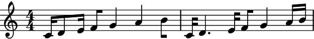Abjad’s
abjad.mutate().rewrite_meter()mutates anabjad.Selectionof a measure, improving its notation.>>> for measure in abjad.select(staff[:]).group_by_measure(): ... abjad.mutate(measure).rewrite_meter(abjad.Meter((4, 4))) >>> abjad.f(staff) \new Staff { c'16 d'16 ~ d'16 e'16 f'8 g'8 ~ g'8 a'8 ~ a'8 b'8 c'16 d'8. ~ d'8. e'16 f'8 g'8 ~ g'8 a'16 b'16 }

This function mutates an
abjad.Container(or child class), identifying the implied meters of each measure and applying bothabjad.mutate().rewrite_meter()andauxjad.mutate().prettify_rewrite_meter()to it. See the documentation of the latter for a detailed explanation of what it does.Applying
auxjad.mutate().auto_rewrite_meter()to the same initial container shown in the first figure above outputs:>>> staff = abjad.Staff(r"c'16 d'8 e'16 f'8 g'4 a'4 b'8 " ... r"c'16 d'4. e'16 f'8 g'4 a'16 b'16") >>> auxjad.mutate(staff).auto_rewrite_meter() >>> abjad.f(staff) \new Staff { c'16 d'8 e'16 f'8 g'8 ~ g'8 a'4 b'8 c'16 d'8. ~ d'8. e'16 f'8 g'4 a'16 b'16 }
Note
Auxjad automatically adds this function as an extension method to
abjad.mutate(). It can thus be used from eitherauxjad.mutate()orabjad.mutate(). Therefore, the two lines below are equivalent:>>> auxjad.mutate(staff).auto_rewrite_meter() >>> abjad.mutate(staff).auto_rewrite_meter()
- Time signature changes:
It automatically handles time signature changes.
>>> staff = abjad.Staff(r"c'16 d'8 e'16 f'8 g'4 a'4 b'8 " ... r"\time 6/8 b'4 c''4 r4 ") >>> auxjad.mutate(staff).auto_rewrite_meter() >>> abjad.f(staff) \new Staff { c'16 d'8 e'16 f'8 g'8 ~ g'8 a'4 b'8 \time 6/8 b'4 c''8 ~ c''8 r4 }

prettify_rewrite_meter:By default, this function invokes both
abjad.mutate().rewrite_meter()andauxjad.mutate().prettify_rewrite_meter().>>> staff = abjad.Staff(r"c'16 d'8 e'16 f'8 g'4 a'4 b'8 " ... r"c'16 d'8 e'16 f'8 g'4 a'4 b'8") >>> auxjad.mutate(staff).auto_rewrite_meter() >>> abjad.f(staff) \new Staff { c'16 d'8 e'16 f'8 g'8 ~ g'8 a'4 b'8 c'16 d'8 e'16 f'8 g'8 ~ g'8 a'4 b'8 }

Set
prettify_rewrite_metertoFalseto not invokeauxjad.mutate().prettify_rewrite_meter().>>> staff = abjad.Staff(r"c'16 d'8 e'16 f'8 g'4 a'4 b'8 " ... r"c'16 d'4. e'16 f'8 g'4 a'16 b'16") >>> auxjad.mutate(staff).auto_rewrite_meter( ... prettify_rewrite_meter=False, ... ) >>> abjad.f(staff) \new Staff { c'16 d'16 ~ d'16 e'16 f'8 g'8 ~ g'8 a'8 ~ a'8 b'8 c'16 d'8. ~ d'8. e'16 f'8 g'8 ~ g'8 a'16 b'16 }
meter_list:When no
meter_listis supplied, this function detects the time signature of each measure and uses those when rewritting it:>>> staff = abjad.Staff(r"\time 7/4 c'8 d'4 e'4 f'4 g'4 a'4 b'4 c''8 " ... r"\time 5/4 d''8 e''4 f''4 g''4 a''4 b''8") >>> auxjad.mutate(staff).auto_rewrite_meter() >>> abjad.f(staff) \new Staff { \time 7/4 c'8 d'4 e'4 f'8 ~ f'8 g'4 a'8 ~ a'8 b'4 c''8 \time 5/4 d''8 e''4 f''4 g''8 ~ g''8 a''4 b''8 }
To use a custom list of meters (one for each measure), set
meter_listto alistofabjad.Meter’s orabjad.TimeSignature’s.>>> staff = abjad.Staff(r"\time 7/4 c'8 d'4 e'4 f'4 g'4 a'4 b'4 c''8 " ... r"\time 5/4 d''8 e''4 f''4 g''4 a''4 b''8") >>> meter_list = [abjad.Meter((7, 4), increase_monotonic=True), ... abjad.Meter((5, 4), increase_monotonic=True), ... ] >>> auxjad.mutate(staff).auto_rewrite_meter(meter_list=meter_list) >>> abjad.f(staff) \new Staff { \time 7/4 c'8 d'4 e'8 ~ e'8 f'4 g'8 ~ g'8 a'4 b'4 c''8 \time 5/4 d''8 e''4 f''8 ~ f''8 g''4 a''4 b''8 }
- Number of measures:
This function handles a container with any number of measures and any number of time signature changes:
>>> staff = abjad.Staff( ... r"\time 3/4 c'8 d'4 e'4 f'8 " ... r"\time 5/8 g'4 a'4 r8 " ... r"\time 6/8 b'4 c''4 r4 " ... r"\time 4/4 d''8 e''4 f''8 g''16 a''4 r8." ... ) >>> auxjad.mutate(staff).auto_rewrite_meter() >>> abjad.f(staff) \new Staff { \time 3/4 c'8 d'4 e'4 f'8 \time 5/8 g'4 a'8 ~ a'8 r8 \time 6/8 b'4 c''8 ~ c''8 r4 \time 4/4 d''8 e''4 f''8 g''16 a''8. ~ a''16 r8. }
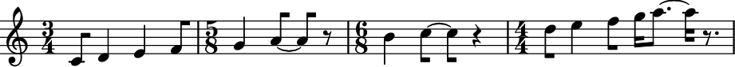extract_trivial_tuplets:By default, tuplets filled with rests or tied notes or chords are extracted:
>>> staff = abjad.Staff( ... r"\times 2/3 {c'4 ~ c'8} \times 2/3 {d'8 r4} " ... r"\times 2/3 {r8 r8 r8} \times 2/3 {<e' g'>8 ~ <e' g'>4}" ... ) >>> auxjad.mutate(staff).auto_rewrite_meter() >>> abjad.f(staff) \new Staff { c'4 \times 2/3 { d'8 r4 } r4 <e' g'>4 }

Set
extract_trivial_tupletstoFalseto disable this behaviour.>>> staff = abjad.Staff( ... r"\times 2/3 {c'4 ~ c'8} \times 2/3 {d'8 r4} " ... r"\times 2/3 {r8 r8 r8} \times 2/3 {<e' g'>8 ~ <e' g'>4}" ... ) >>> auxjad.mutate(staff).auto_rewrite_meter( ... extract_trivial_tuplets=False, ... ) >>> abjad.f(staff) \new Staff { \times 2/3 { c'4. } \times 2/3 { d'8 r4 } \times 2/3 { r4. } \times 2/3 { <e' g'>4. } }

merge_partial_tuplets:By default, consecutive partial tuplets with the same ratio that sum up to an assignable duration will be merged together:
>>> staff = abjad.Staff(r"\times 2/3 {c'2 d'1}" ... r"\times 2/3 {e'2} \times 2/3 {f'1}" ... ) >>> auxjad.mutate(staff).auto_rewrite_meter() >>> abjad.f(staff) \new Staff { \times 2/3 { c'2 d'1 } \times 2/3 { e'2 f'1 } }
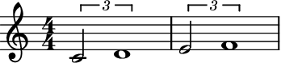Set
merge_partial_tupletstoFalseto disable this behaviour.>>> staff = abjad.Staff(r"\times 2/3 {c'2 d'1}" ... r"\times 2/3 {e'2} \times 2/3 {f'1}" ... ) >>> auxjad.mutate(staff).auto_rewrite_meter( ... merge_partial_tuplets=False, ... ) >>> abjad.f(staff) \new Staff { \times 2/3 { c'2 d'1 } \tweak edge-height #'(0.7 . 0) \times 2/3 { e'2 } \tweak edge-height #'(0.7 . 0) \times 2/3 { f'1 } }

Note
This function also accepts the arguments
boundary_depth,maximum_dot_count, andrewrite_tuplets, which are passed on toabjad.mutate().rewrite_meter(), andfuse_across_groups_of_beats,fuse_quadruple_meter,fuse_triple_meter, andsplit_quadruple_meter, which are passed on toauxjad.mutate().prettify_rewrite_meter().merge_partial_tupletsis used to invokeauxjad.mutate().merge_partial_tuplets()See the documentation of these functions for more details on these arguments.Warning
Setting
boundary_depthto a value equal to or larger than1will automatically disablefuse_across_groups_of_beats,fuse_quadruple_meter, andfuse_triple_meter, regardless of their values. This is because when any of those arguments isTrue,auxjad.mutate().prettify_rewrite_meter()will fuse across beats, which goes against the purpose of usingboundary_depth. Compare the results below. In the first case, simply applyingauxjad.mutate().prettify_rewrite_meter()with no arguments results in some logical ties being tied across beats.>>> staff = abjad.Staff(r"\time 4/4 c'4. d'4. e'4 f'8 g'4 a'4 b'4.") >>> meter = abjad.Meter((4, 4)) >>> for measure in abjad.select(staff[:]).group_by_measure(): ... abjad.mutate(measure).rewrite_meter(meter, boundary_depth=1) >>> for measure in abjad.select(staff[:]).group_by_measure(): ... auxjad.mutate(measure).prettify_rewrite_meter(meter) >>> abjad.f(staff) \new Staff { \time 4/4 c'4 ~ c'8 d'8 ~ d'4 e'4 f'8 g'4 a'8 ~ a'8 b'8 ~ b'4 }

By automatically setting all
fuse_across_groups_of_beats,fuse_quadruple_meter, andfuse_triple_meter` to ``Falsewhenboundary_depthis equal to or larger than1, this function will not fuse those leaves against the required boundary depth.>>> staff = abjad.Staff(r"\time 4/4 c'4. d'4. e'4 f'8 g'4 a'4 b'4.") >>> auxjad.mutate(staff).auto_rewrite_meter(boundary_depth=1) >>> abjad.f(staff) \new Staff { \time 4/4 c'4 ~ c'8 d'8 ~ d'4 e'4 f'8 g'8 ~ g'8 a'8 ~ a'8 b'8 ~ b'4 }
-
property
client¶ Gets client. Returns selection or component.
-
close_container() → None¶ Mutates an input container (of type
abjad.Containeror child class) in place and has no return value; this function changes the time signature of the last measure of an underfull in order to make it full.- Basic usage:
Returns the missing duration of the last measure of any container or child class. If no time signature is encountered, it uses LilyPond’s convention and considers the container as in 4/4.
>>> container1 = abjad.Staff(r"c'4 d'4 e'4 f'4") >>> container2 = abjad.Staff(r"c'4 d'4 e'4") >>> container3 = abjad.Staff(r"c'4 d'4 e'4 f'4 | c'4") >>> container4 = abjad.Staff(r"c'4 d'4 e'4 f'4 | c'4 d'4 e'4 f'4") >>> auxjad.mutate(container1).close_container() >>> auxjad.mutate(container2).close_container() >>> auxjad.mutate(container3).close_container() >>> auxjad.mutate(container4).close_container() >>> abjad.f(container1) \new Staff { c'4 d'4 e'4 f'4 }

>>> abjad.f(container2) \new Staff { \time 3/4 c'4 d'4 e'4 }

>>> abjad.f(container3) \new Staff { c'4 d'4 e'4 f'4 \time 1/4 c'4 }
>>> abjad.f(container4) \new Staff { c'4 d'4 e'4 f'4 c'4 d'4 e'4 f'4 }

Note
Auxjad automatically adds this function as an extension method to
abjad.mutate(). It can thus be used from eitherauxjad.mutate()orabjad.mutate(). Therefore, the two lines below are equivalent:>>> auxjad.mutate(staff).close_containers() >>> abjad.mutate(staff).close_containers()
- Time signature changes:
Handles any time signatures as well as changes of time signature.
>>> container1 = abjad.Staff(r"\time 4/4 c'4 d'4 e'4 f'4 g'") >>> container2 = abjad.Staff(r"\time 3/4 a2. \time 2/4 c'4") >>> container3 = abjad.Staff(r"\time 5/4 g1 ~ g4 \time 4/4 af'2") >>> auxjad.mutate(container1).close_container() >>> auxjad.mutate(container2).close_container() >>> auxjad.mutate(container3).close_container() >>> abjad.f(container1) \new Staff { \time 4/4 c'4 d'4 e'4 f'4 \time 1/4 g'4 }
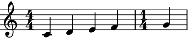>>> abjad.f(container2) \new Staff { \time 3/4 a2. \time 1/4 c'4 }
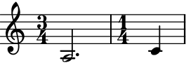>>> abjad.f(container3) \new Staff { \time 5/4 g1 ~ g4 \time 2/4 af'2 }
Note
When using
abjad.Container’s, all time signatures in the output will be commented out with%%%.This is because Abjad only applies time signatures to containers that belong to aabjad.Staff. The present function works with eitherabjad.Containerandabjad.Staff.>>> container = abjad.Container(r"\time 3/4 c'4 d'4 e'4") >>> abjad.f(container) { %%% \time 3/4 %%% c'4 d'4 e'4 }

>>> staff = abjad.Staff([container]) >>> abjad.f(container) { \time 3/4 c'4 d'4 e'4 }

- Partial time signatures:
Correctly handles partial time signatures.
>>> container = abjad.Staff(r"c'4 d'4 e'4 f'4 g'4") >>> time_signature = abjad.TimeSignature((3, 4), partial=(1, 4)) >>> abjad.attach(time_signature, container[0]) >>> auxjad.mutate(container).close_container() >>> abjad.f(container) \new Staff { \partial 4 \time 3/4 c'4 d'4 e'4 f'4 \time 1/4 g'4 }

Error
If a container is malformed, i.e. it has an underfilled measure before a time signature change, the function raises a
ValueErrorexception.>>> container = abjad.Container(r"\time 5/4 g''1 \time 4/4 f'4") >>> auxjad.mutate(container).close_container() ValueError: 'container' is malformed, with an underfull measure preceding a time signature change
Warning
The input container must be a contiguous logical voice. When dealing with a container with multiple subcontainers (e.g. a score containing multiple staves), the best approach is to cycle through these subcontainers, applying this function to them individually.
-
double_barlines_before_time_signatures(*, context: Optional[str] = None) → None¶ Mutates an input
abjad.Selectionin place and has no return value; this function adds double bar lines before all time signatures.- Basic usage:
Whenever a new time signature appears, the function adds a double bar line before it:
>>> staff = abjad.Staff( ... r"\time 3/4 c'2. \time 4/4 d'1 e'1 \time 6/4 f'2. g'2." ... ) >>> auxjad.mutate(staff[:]).double_barlines_before_time_signatures() >>> abjad.f(staff) \new Staff { \time 3/4 c'2. \bar "||" \time 4/4 d'1 e'1 \bar "||" \time 6/4 f'2. g'2. }
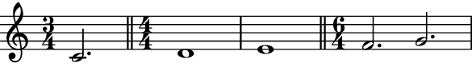- Multi-measure rests:
This function can handle multi-measure rests too.
>>> staff = abjad.Staff( ... r"\time 3/4 R1 * 3/4 " ... r"\time 4/4 R1 * 2 " ... r"\time 6/4 R1 * 6/4 " ... r"\time 4/4 R1" ... ) >>> auxjad.mutate(staff[:]).double_barlines_before_time_signatures() >>> abjad.f(staff) \new Staff { \time 3/4 R1 * 3/4 \bar "||" \time 4/4 R1 * 2 \bar "||" \time 6/4 R1 * 3/2 \bar "||" \time 4/4 R1 }

- Input with bar lines:
If the input selection already contains bar lines at poinst where a time signature change, the function will only replace those of type
"|"or"", keeping all others as they were.>>> staff = abjad.Staff( ... r"R1 " ... r"\time 3/4 c'2. " ... r"\time 4/4 d'1 " ... r"e'1 " ... r"\time 6/4 f'2. g'2. " ... r"\time 2/4 a'2" ... ) >>> abjad.attach(abjad.BarLine('.|:'), staff[0]) >>> abjad.attach(abjad.BarLine(':|.'), staff[1]) >>> abjad.attach(abjad.BarLine('|'), staff[3]) >>> abjad.attach(abjad.BarLine('!'), staff[5]) >>> auxjad.mutate(staff[:]).double_barlines_before_time_signatures() >>> abjad.f(staff) \new Staff { R1 \bar ".|:" \time 3/4 c'2. \bar ":|." \time 4/4 d'1 e'1 \bar "||" \time 6/4 f'2. g'2. \bar "!" \time 2/4 a'2 }

Warning
Attempting to add barlines to multiple staves in an
abjad.Scoreat the same point in the score will raise an exception:>>> up = abjad.Staff(r"\time 4/4 c'1 d'1 \time 6/4 e'1.") >>> down = abjad.Staff( ... r"\time 4/4 \clef bass c1 d1 \time 6/4 e1." ... ) >>> score = abjad.Score([up, down]) >>> auxjad.mutate(up[:]).double_barlines_before_time_signatures() >>> auxjad.mutate(down[:]).double_barlines_before_time_signatures() abjad.exceptions.PersistentIndicatorError: Can not attach ... abjad.Wrapper( context='Score', indicator=abjad.BarLine('||', format_slot='after', ), tag=abjad.Tag(), ) ... to Note('d1') in None because ... abjad.Wrapper( context='Score', indicator=abjad.BarLine('||', format_slot='after', ), tag=abjad.Tag(), ) ... is already attached to Note("d'1") in None.
This is because, by default, bar lines belong to the score scope. In order to have bar lines on both staves (e.g. for easier part extraction), invoke this mutation with the argument
contextset to'Staff'so that the double bar lines become scoped to the staff instead of the score:>>> up = abjad.Staff(r"\time 4/4 c'1 d'1 \time 6/4 e'1.") >>> down = abjad.Staff(r"\time 4/4 \clef bass c1 d1 \time 6/4 e1.") >>> score = abjad.Score([up, down]) >>> auxjad.mutate(up[:]).double_barlines_before_time_signatures( ... context='Staff', ... ) >>> auxjad.mutate(down[:]).double_barlines_before_time_signatures( ... context='Staff', ... ) >>> abjad.f(score) \new Score << \new Staff { \time 4/4 c'1 d'1 \bar "||" \time 6/4 e'1. } \new Staff { \time 4/4 \clef "bass" c1 d1 \bar "||" \time 6/4 e1. } >>

In this case, both individual staves will also have the bar lines:
>>> abjad.f(up) \new Staff { \time 4/4 c'1 d'1 \bar "||" \time 6/4 e'1. }

>>> abjad.f(down) \new Staff { \time 4/4 \clef "bass" c1 d1 \bar "||" \time 6/4 e1. }

Warning
The input selection must be a contiguous logical voice. When dealing with a container with multiple subcontainers (e.g. a score containing multiple staves), the best approach is to cycle through these subcontainers, applying this function to them individually.
-
enforce_time_signature(time_signatures: Union[abjad.indicators.TimeSignature.TimeSignature, tuple, list], *, cyclic: bool = False, fill_with_rests: bool = True, close_container: bool = False, disable_rewrite_meter: bool = False, prettify_rewrite_meter: bool = True, boundary_depth: Optional[int] = None, maximum_dot_count: Optional[int] = None, rewrite_tuplets: bool = True, extract_trivial_tuplets: bool = True, fuse_across_groups_of_beats: bool = True, fuse_quadruple_meter: bool = True, fuse_triple_meter: bool = True, split_quadruple_meter: bool = True) → None¶ Mutates an input container (of type
abjad.Containeror child class) in place and has no return value; this function applies a time signature (or alistof time signatures) to the input container.- Basic usage:
The function mutates a container in place, applying a time signature to it.
>>> staff = abjad.Staff(r"c'1 d'1") >>> abjad.f(staff) \new Staff { c'1 d'1 }

>>> auxjad.mutate(staff).enforce_time_signature( ... abjad.TimeSignature((2, 4)) ... ) >>> abjad.f(staff) \new Staff { \time 2/4 c'2 ~ c'2 d'2 ~ d'2 }

Note
Auxjad automatically adds this function as an extension method to
abjad.mutate(). It can thus be used from eitherauxjad.mutate()orabjad.mutate(). Therefore, the two lines below are equivalent:>>> auxjad.mutate(staff).enforce_time_signature( ... abjad.TimeSignature((2, 4)) ... ) >>> abjad.mutate(staff).enforce_time_signature( ... abjad.TimeSignature((2, 4)) ... )
- Single value for second positional argument:
The second positional argument can take either
abjad.TimeSignatureor atuplefor a single time signature (for multiple time signatures, use alistas shown further below). By default, rests will be appended to the end of the staff if necessary.>>> staff = abjad.Staff(r"c'1 d'1") >>> abjad.f(staff) \new Staff { c'1 d'1 }

>>> auxjad.mutate(staff).enforce_time_signature((3, 4)) >>> abjad.f(staff) \new Staff { \time 3/4 c'2. ~ c'4 d'2 ~ d'2 r4 }

close_container:Set the optional keyword argument
close_containertoTruein order to adjust the last measure’s time signature instead of filling it with rests.>>> staff = abjad.Staff(r"c'1 d'1 e'1 f'1") >>> abjad.f(staff) \new Staff { c'1 d'1 e'1 f'1 }

>>> auxjad.mutate(staff).enforce_time_signature( ... abjad.TimeSignature((3, 4)), ... close_container=True, ... ) >>> abjad.f(staff) \new Staff { \time 3/4 c'2. ~ c'4 d'2 ~ d'2 e'4 ~ e'2. f'2. ~ \time 1/4 f'4 }
fill_with_rests:Alternatively, to leave the last measure as it is input (i.e. not filling it with rests nor adjusting the time signature), set the optional keyword argument
fill_with_reststoFalse(default value isTrue).>>> staff = abjad.Staff(r"c'1 d'1 e'1 f'1") >>> abjad.f(staff) \new Staff { c'1 d'1 e'1 f'1 }

>>> auxjad.mutate(staff).enforce_time_signature( ... abjad.TimeSignature((3, 4)), ... fill_with_rests=False, ... ) >>> abjad.f(staff) \new Staff { \time 3/4 c'2. ~ c'4 d'2 ~ d'2 e'4 ~ e'2. f'2. ~ f'4 }

- Multiple values for second positional argument:
The second argument can also take a
listofabjad.TimeSignatureortuple.>>> staff = abjad.Staff(r"c'1 d'1") >>> abjad.f(staff) \new Staff { c'1 d'1 }

>>> time_signatures = [abjad.TimeSignature((3, 4)), ... abjad.TimeSignature((5, 4)), ... ] >>> auxjad.mutate(staff).enforce_time_signature(time_signatures) >>> abjad.f(staff) \new Staff { \time 3/4 c'2. ~ \time 5/4 c'4 d'1 }

- Repeated time signatures:
Consecutive identical time signatures are omitted. Also note that time signatures can also be represented as a
listoftuple’s.>>> staff = abjad.Staff(r"c'1 d'1 e'1 f'1") >>> abjad.f(staff) \new Staff { c'1 d'1 e'1 f'1 }

>>> time_signatures = [(2, 4), ... (2, 4), ... (4, 4), ... ] >>> auxjad.mutate(staff).enforce_time_signature(time_signatures) >>> abjad.f(staff) \new Staff { \time 2/4 c'2 ~ c'2 \time 4/4 d'1 e'1 f'1 }
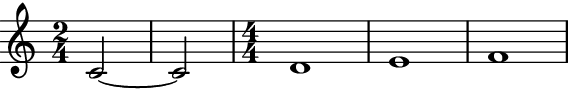Alternatively, use
Noneto indicate repeated time signatures:>>> staff = abjad.Staff(r"c'1 d'1 e'1 f'1") >>> abjad.f(staff) \new Staff { c'1 d'1 e'1 f'1 }

>>> time_signatures = [(2, 4), ... None, ... None, ... (3, 4), ... None, ... (4, 4), ... ] >>> auxjad.mutate(staff).enforce_time_signature(time_signatures) >>> abjad.f(staff) \new Staff { \time 2/4 c'2 ~ c'2 d'2 ~ \time 3/4 d'2 e'4 ~ e'2. \time 4/4 f'1 }
cyclic:To cycle through the
listof time signatures until the container is exhausted, set the optional keyword argumentcyclictoTrue.>>> staff = abjad.Staff(r"c'1 d'1 e'1 f'1") >>> abjad.f(staff) \new Staff { c'1 d'1 e'1 f'1 }

>>> time_signatures = [abjad.TimeSignature((3, 8)), ... abjad.TimeSignature((2, 8)), ... ] >>> auxjad.mutate(staff).enforce_time_signature( ... time_signatures, ... cyclic=True, ... ) >>> abjad.f(staff) \new Staff { \time 3/8 c'4. ~ \time 2/8 c'4 ~ \time 3/8 c'4. \time 2/8 d'4 ~ \time 3/8 d'4. ~ \time 2/8 d'4 ~ \time 3/8 d'8 e'4 ~ \time 2/8 e'4 ~ \time 3/8 e'4. ~ \time 2/8 e'8 f'8 ~ \time 3/8 f'4. ~ \time 2/8 f'4 ~ \time 3/8 f'4 r8 }

disable_rewrite_meter:By default, this function applies the mutation
abjad.mutate().rewrite_meter()to its output.>>> staff = abjad.Staff(r"c'1 ~ c'4 r8 d'4. e'4") >>> time_signatures = [abjad.TimeSignature((5, 4)), ... abjad.TimeSignature((3, 4)), ... ] >>> auxjad.mutate(staff).enforce_time_signature(time_signatures) >>> abjad.f(staff) \new Staff { \time 5/4 c'2. ~ c'2 \time 3/4 r8 d'4. e'4 }

To disable this, set the keyword argument
disable_rewrite_metertoTrue.>>> staff = abjad.Staff(r"c'1 ~ c'4 r8 d'4. e'4") >>> time_signatures = [abjad.TimeSignature((5, 4)), ... abjad.TimeSignature((3, 4)), ... ] >>> auxjad.mutate(staff).enforce_time_signature( ... time_signatures, ... disable_rewrite_meter=True, ... ) >>> abjad.f(staff) \new Staff { \time 5/4 c'1 ~ c'4 \time 3/4 r8 d'4. e'4 }

- Tuplets:
The function handles tuplets, even if they must be split.
>>> staff = abjad.Staff(r"\times 2/3 {c'2 d'2 e'2} f'1") >>> abjad.f(staff) \new Staff { \times 2/3 { c'2 d'2 e'2 } f'1 }

>>> time_signatures = [abjad.TimeSignature((2, 4)), ... abjad.TimeSignature((3, 4)), ... ] >>> auxjad.mutate(staff).enforce_time_signature(time_signatures) >>> abjad.f(staff) \new Staff { \times 2/3 { \time 2/4 c'2 d'4 ~ } \times 2/3 { \time 3/4 d'4 e'2 } f'4 ~ f'2. }
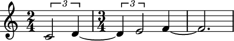- Time signatures in the input container:
Note that any time signatures in the input container will be ignored.
>>> staff = abjad.Staff(r"\time 3/4 c'2. d'2. e'2. f'2.") >>> abjad.f(staff) \new Staff { \time 3/4 c'2. d'2. e'2. f'2. }

>>> time_signatures = [abjad.TimeSignature((5, 8)), ... abjad.TimeSignature((1, 16)), ... abjad.TimeSignature((2, 4)), ... ] >>> auxjad.mutate(staff).enforce_time_signature( ... time_signatures, ... cyclic=True, ... ) >>> abjad.f(staff) \new Staff { \time 5/8 c'4. ~ c'4 ~ \time 1/16 c'16 ~ \time 2/4 c'16 d'4.. ~ \time 5/8 d'4 ~ d'16 e'16 ~ e'4 ~ \time 1/16 e'16 ~ \time 2/4 e'4. f'8 ~ \time 5/8 f'4. ~ f'4 }

- Tweaking
abjad.mutate().rewrite_meter(): This function uses the default logical tie splitting algorithm from
abjad.mutate().rewrite_meter().>>> staff = abjad.Staff(r"c'4. d'8 e'2") >>> auxjad.mutate(staff).enforce_time_signature( ... abjad.TimeSignature((4, 4)), ... ) >>> abjad.f(staff) \new Staff { \time 4/4 c'4. d'8 e'2 }

Set
boundary_depthto a different number to change its behaviour.>>> staff = abjad.Staff(r"c'4. d'8 e'2") >>> auxjad.mutate(staff).enforce_time_signature( ... abjad.TimeSignature((4, 4)), ... boundary_depth=1, ... ) >>> abjad.f(staff) \new Staff { \time 4/4 c'4 ~ c'8 d'8 e'2 }

Other arguments available for tweaking the output of
abjad.mutate().rewrite_meter()aremaximum_dot_countandrewrite_tuplets, which work exactly as the identically named arguments ofabjad.mutate().rewrite_meter().This function also accepts the arguments
fuse_across_groups_of_beats,fuse_quadruple_meter,fuse_triple_meter,extract_trivial_tuplets, andsplit_quadruple_meter, which are passed on toauxjad.mutate().prettify_rewrite_meter()(the latter can be disabled by settingprettify_rewrite_metertoFalse). See the documentation of this function for more details on these arguments.
Note
When using
abjad.Container’s, all time signatures in the output will be commented out with%%%.This is because Abjad only applies time signatures to containers that belong to aabjad.Staff. The present function works with eitherabjad.Containerandabjad.Staff.>>> container = abjad.Container(r"\time 3/4 c'4 d'4 e'4") >>> abjad.f(container) { %%% \time 3/4 %%% c'4 d'4 e'4 }
>>> staff = abjad.Staff([container]) >>> abjad.f(container) { \time 3/4 c'4 d'4 e'4 }

Warning
The input container must be a contiguous logical voice. When dealing with a container with multiple subcontainers (e.g. a score containing multiple staves), the best approach is to cycle through these subcontainers, applying this function to them individually.
-
extract_trivial_tuplets() → None¶ Mutates an input
abjad.Selectionin place and has no return value; this function looks for tuplets filled with rests or with tied notes or chords and replaces them with a single leaf.- Basic usage:
Usage is simple:
>>> staff = abjad.Staff( ... r"\times 2/3 {r4 r2} \times 2/3 {c'8 ~ c'8 ~ c'2}" ... ) >>> abjad.f(container) { \times 2/3 { r4 r2 } \times 2/3 { c'8 ~ c'8 ~ c'2 } }
>>> auxjad.mutate(container[:]).extract_trivial_tuplets() >>> abjad.f(container) { r2 c'2 }
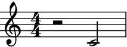It also works with containers with tuplets within tuplets.
>>> container = abjad.Container(r"\times 4/5 {r2. \times 2/3 {r2 r4}}") >>> abjad.f(container) { \times 4/5 { r2. \times 2/3 { r2 r4 } } }
>>> auxjad.mutate(container[:]).extract_trivial_tuplets() >>> abjad.f(container) { r1 }
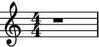>>> container = abjad.Container( ... r"\times 4/5 {c'2. ~ \times 2/3 {c'2 ~ c'4}}" ... ) >>> abjad.f(container) { \times 4/5 { c'2. ~ \times 2/3 { c'2 ~ c'4 } } }
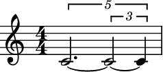>>> auxjad.mutate(staff[:]).extract_trivial_tuplets() >>> abjad.f(container) { c'1 }

Note
Auxjad automatically adds this function as an extension method to
abjad.mutate(). It can thus be used from eitherauxjad.mutate()orabjad.mutate(). Therefore, the two lines below are equivalent:>>> auxjad.mutate(staff[:]).extract_trivial_tuplets() >>> abjad.mutate(staff[:]).extract_trivial_tuplets()
- Partial extraction:
This function also extracts tuplets within tuplets.
>>> container = abjad.Container( ... r"r2 \times 2/3 {r2 r4} \times 4/5 {c'2. \times 2/3 {r2 r4}}" ... ) >>> abjad.f(container) { r2 \times 2/3 { r2 r4 } \times 4/5 { c'2. \times 2/3 { r2 r4 } } }
>>> auxjad.mutate(container[:]).extract_trivial_tuplets() >>> abjad.f(container) { r2 r2 \times 4/5 { c'2. r2 } }
Tip
Use
auxjad.mutate().rests_to_multimeasure_rest()to replace measures filled with rests by a single multi-measure rest. That function makes use ofauxjad.mutate().extract_trivial_tuplets(), so it is not necessary to flatten the empty tuplets beforehand.- Time signature changes:
Works with measures with any time signature.
>>> container = abjad.Staff(r"\time 3/4 r2. \times 3/2 {r4 r4}") >>> auxjad.mutate(container[:]).extract_trivial_tuplets() >>> abjad.f(container) \new Staff { \time 3/4 r2. r2. }
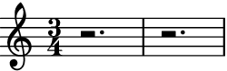- Non-assignable durations:
This function also extracts tuplets which sum up to a non-assignable duration. In this case, it creates multiple leaves and substitutes them for the original tuplet. Indicators are passed on to the first leaf of the new leaves.
>>> staff = abjad.Staff(r"\time 6/4 c'4\f \times 5/6 {g1.\p}") >>> abjad.f(staff) \new Staff { \time 6/4 c'4 \f \tweak text #tuplet-number::calc-fraction-text \times 5/6 { g1. \p } }

>>> abjad.mutate(staff[:]).extract_trivial_tuplets() >>> abjad.f(staff) \new Staff { \time 6/4 c'4 \f g1 \p ~ g4 }
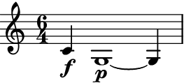
Note
When using
abjad.Container’s, all time signatures in the output will be commented out with%%%.This is because Abjad only applies time signatures to containers that belong to aabjad.Staff. The present function works with eitherabjad.Containerandabjad.Staff.>>> container = abjad.Container(r"\time 3/4 c'4 d'4 e'4") >>> abjad.f(container) { %%% \time 3/4 %%% c'4 d'4 e'4 }

>>> staff = abjad.Staff([container]) >>> abjad.f(container) { \time 3/4 c'4 d'4 e'4 }

Warning
The input selection must be a contiguous logical voice. When dealing with a container with multiple subcontainers (e.g. a score containing multiple staves), the best approach is to cycle through these subcontainers, applying this function to them individually.
-
fill_with_rests(*, disable_rewrite_meter: bool = False, prettify_rewrite_meter: bool = True, boundary_depth: Optional[int] = None, maximum_dot_count: Optional[int] = None, rewrite_tuplets: bool = True, extract_trivial_tuplets: bool = True, fuse_across_groups_of_beats: bool = True, fuse_quadruple_meter: bool = True, fuse_triple_meter: bool = True, split_quadruple_meter: bool = True) → None¶ Mutates an input container (of type
abjad.Containeror child class) in place and has no return value; this function fills a container with rests in order to make it full.- Basic usage:
Returns the missing duration of the last measure of any container or child class. If no time signature is encountered, it uses LilyPond’s convention and considers the container as in 4/4.
>>> container1 = abjad.Container(r"c'4 d'4 e'4 f'4") >>> container2 = abjad.Container(r"c'4 d'4 e'4") >>> container3 = abjad.Container(r"c'4 d'4 e'4 f'4 | c'4") >>> container4 = abjad.Container(r"c'4 d'4 e'4 f'4 | c'4 d'4 e'4 f'4") >>> auxjad.mutate(container1).fill_with_rests() >>> auxjad.mutate(container2).fill_with_rests() >>> auxjad.mutate(container3).fill_with_rests() >>> auxjad.mutate(container4).fill_with_rests() >>> abjad.f(container1) { c'4 d'4 e'4 f'4 }

>>> abjad.f(container2) { c'4 d'4 e'4 r4 }

>>> abjad.f(container3) { c'4 d'4 e'4 f'4 c'4 r2. }
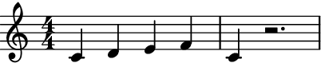>>> abjad.f(container4) { c'4 d'4 e'4 f'4 c'4 d'4 e'4 f'4 }

Note
Auxjad automatically adds this function as an extension method to
abjad.mutate(). It can thus be used from eitherauxjad.mutate()orabjad.mutate(). Therefore, the two lines below are equivalent:>>> auxjad.mutate(staff).fill_with_rests() >>> abjad.mutate(staff).fill_with_rests()
- Time signature changes:
Handles any time signatures as well as changes of time signature.
>>> staff1 = abjad.Staff(r"\time 4/4 c'4 d'4 e'4 f'4 g'") >>> staff2 = abjad.Staff(r"\time 3/4 a2. \time 2/4 c'4") >>> staff3 = abjad.Staff(r"\time 5/4 g1 ~ g4 \time 4/4 af'2") >>> auxjad.mutate(staff1).fill_with_rests() >>> auxjad.mutate(staff2).fill_with_rests() >>> auxjad.mutate(staff3).fill_with_rests() >>> abjad.f(staff1) { \time 4/4 c'4 d'4 e'4 f'4 g'4 r2. }
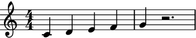>>> abjad.f(staff2) { \time 3/4 a2. \time 2/4 c'4 r4 }
>>> abjad.f(staff3) { \time 5/4 g1 ~ g4 \time 4/4 af'2 r2 }
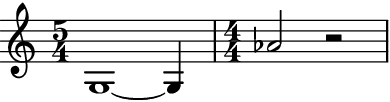
Note
When using
abjad.Container’s, all time signatures in the output will be commented out with%%%.This is because Abjad only applies time signatures to containers that belong to aabjad.Staff. The present function works with eitherabjad.Containerandabjad.Staff.>>> container = abjad.Container(r"\time 3/4 c'4 d'4 e'4") >>> abjad.f(container) { %%% \time 3/4 %%% c'4 d'4 e'4 }

>>> staff = abjad.Staff([container]) >>> abjad.f(container) { \time 3/4 c'4 d'4 e'4 }
- Partial time signatures:
Correctly handles partial time signatures.
>>> staff = abjad.Staff(r"c'4 d'4 e'4 f'4 g'4") >>> time_signature = abjad.TimeSignature((3, 4), partial=(1, 4)) >>> abjad.attach(time_signature, staff[0]) >>> auxjad.mutate(staff).fill_with_rests() >>> abjad.f(staff) { \partial 4 \time 3/4 c'4 d'4 e'4 f'4 g'4 r2 }
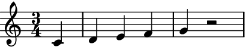disable_rewrite_meter:By default, this class applies the
abjad.mutate().rewrite_meter()mutation to the last measure when rests are added.>>> staff = abjad.Staff(r"\time 4/4 c'8 d'4 e'4") >>> auxjad.mutate(staff).fill_with_rests() >>> abjad.f(staff) \new Staff { \time 4/4 c'8 d'4 e'8 ~ e'8 r4. }
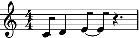Call this function with the optional keyword argument
disable_rewrite_meterset toTruein order to disable this behaviour.>>> staff = abjad.Staff(r"\time 4/4 c'8 d'4 e'4") >>> auxjad.mutate(staff, disable_rewrite_meter=True).fill_with_rests() >>> abjad.f(staff) \new Staff { \time 4/4 c'8 d'4 e'4 r4. }
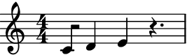
Note
This function also accepts the arguments
boundary_depth,maximum_dot_count, andrewrite_tuplets, which are passed on toabjad.mutate().rewrite_meter(), andfuse_across_groups_of_beats,fuse_quadruple_meter,fuse_triple_meter,extract_trivial_tuplets, andsplit_quadruple_meter, which are passed on toauxjad.mutate().prettify_rewrite_meter()(the latter can be disabled by settingprettify_rewrite_metertoFalse). See the documentation of those functions for more details on these arguments.Error
If a container is malformed, i.e. it has an underfilled measure before a time signature change, the function raises a
ValueErrorexception.>>> container = abjad.Container(r"\time 5/4 g''1 \time 4/4 f'4") >>> auxjad.mutate(container).fill_with_rests() ValueError: 'container' is malformed, with an underfull measure preceding a time signature change
Warning
The input container must be a contiguous logical voice. When dealing with a container with multiple subcontainers (e.g. a score containing multiple staves), the best approach is to cycle through these subcontainers, applying this function to them individually.
-
merge_partial_tuplets(*, merge_across_barlines: bool = False) → None¶ Mutates an input
abjad.Selectionin place and has no return value; this function merges all consecutive partial tuplets with the same ratio and which sum up to an assignable duration. Partial tuplets can result from algorithmic manipulations such as phasing or looping, which can slice through a tuplet.- Basic usage:
Usage is simple:
>>> staff = abjad.Staff(r"\times 2/3 {c'1} \times 2/3 {d'2}") >>> abjad.f(staff) \new Staff { \times 2/3 { c'1 } \times 2/3 { d'2 } }

>>> auxjad.mutate(staff[:]).merge_partial_tuplets() >>> abjad.f(staff) \new Staff { \times 2/3 { c'1 d'2 } }

Note
Auxjad automatically adds this function as an extension method to
abjad.mutate(). It can thus be used from eitherauxjad.mutate()orabjad.mutate(). Therefore, the two lines below are equivalent:>>> auxjad.mutate(staff[:]).merge_partial_tuplets() >>> abjad.mutate(staff[:]).merge_partial_tuplets()
- Multiple consecutive partial tuplets:
This function can also handle several consecutive partial tuplets:
>>> staff = abjad.Staff( ... r"\times 2/3 {c'2} \times 2/3 {d'2} \times 2/3 {e'2}" ... ) >>> abjad.f(staff) { \times 2/3 { c'2 } \times 2/3 { d'2 } \times 2/3 { e'2 } }
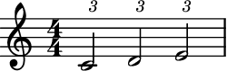>>> auxjad.mutate(staff[:]).merge_partial_tuplets() >>> abjad.f(staff) \new Staff { \times 2/3 { c'2 d'2 e'2 } }
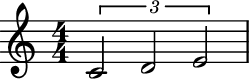merge_across_barlines:By default, partial tuplets are not merged across barlines.
>>> staff = abjad.Staff(r"\time 3/4 c'2. " ... r"\times 2/3 {d'4} r4 \times 2/3 {e'2} " ... r"\times 2/3 {f'4} r4 \times 2/3 {g'2}") >>> auxjad.mutate(staff[:]).merge_partial_tuplets() >>> abjad.f(staff) \new Staff { \time 3/4 c'2. \tweak edge-height #'(0.7 . 0) \times 2/3 { d'4 } r4 \tweak edge-height #'(0.7 . 0) \times 2/3 { e'2 } \tweak edge-height #'(0.7 . 0) \times 2/3 { f'4 } r4 \tweak edge-height #'(0.7 . 0) \times 2/3 { g'2 } }
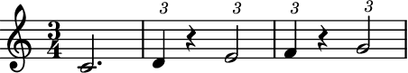To change this behaviour, set
merge_across_barlinestoTrue.>>> staff = abjad.Staff(r"\time 3/4 c'2. " ... r"\times 2/3 {d'4} r4 \times 2/3 {e'2} " ... r"\times 2/3 {f'4} r4 \times 2/3 {g'2}") >>> auxjad.mutate(staff[:]).merge_partial_tuplets( ... merge_across_barlines=True, ... ) >>> abjad.f(staff) \new Staff { \time 3/4 c'2. \tweak edge-height #'(0.7 . 0) \times 2/3 { d'4 } r4 \times 2/3 { e'2 f'4 } r4 \tweak edge-height #'(0.7 . 0) \times 2/3 { g'2 } }

- Tied partial tuplets:
Tied partial tuplets are also handled by this function.
>>> staff = abjad.Staff(r"\times 2/3 {r4} \times 2/3 {c'2} " ... r"\times 4/5 {d'2~} \times 4/5{d'8}") >>> abjad.f(staff) \new Staff { \times 2/3 { r4 } \times 2/3 { c'2 } \times 4/5 { d'2 ~ } \times 4/5 { d'8 } }

>>> auxjad.mutate(staff[:]).merge_partial_tuplets() >>> abjad.f(staff) \new Staff { \times 2/3 { r4 c'2 } \times 4/5 { d'2 ~ d'8 } }

- Indicators:
Indicators stay the same in the merged tuplet.
>>> staff = abjad.Staff( ... r"\times 2/3 {c'2\p\< d'2} \times 2/3 {e'2\ff}" ... ) >>> abjad.f(staff) \new Staff { \times 2/3 { c'2 \p \< d'2 } \times 2/3 { e'2 \ff } }

>>> auxjad.mutate(staff[:]).merge_partial_tuplets() >>> abjad.f(staff) \new Staff { \times 2/3 { c'2 \p \< d'2 e'2 \ff } }
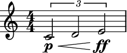
Tip
The method
auxjad.mutate().extract_trivial_tuplets()can be used after merging partial tuplets to further clean the output. The methodauxjad.mutate().auto_rewrite_meter()can also be used for this purpose, as it will not only rewrite the metric notation of a staff but also apply bothauxjad.mutate().merge_partial_tuplets()andauxjad.mutate().extract_trivial_tuplets()to the output.Note
When using
abjad.Container’s, all time signatures in the output will be commented out with%%%.This is because Abjad only applies time signatures to containers that belong to aabjad.Staff. The present function works with eitherabjad.Containerandabjad.Staff.>>> container = abjad.Container(r"\time 3/4 c'4 d'4 e'4") >>> abjad.f(container) { %%% \time 3/4 %%% c'4 d'4 e'4 }

>>> staff = abjad.Staff([container]) >>> abjad.f(container) { \time 3/4 c'4 d'4 e'4 }

Warning
The input selection must be a contiguous logical voice. When dealing with a container with multiple subcontainers (e.g. a score containing multiple staves), the best approach is to cycle through these subcontainers, applying this function to them individually.
-
prettify_rewrite_meter(meter: Union[abjad.meter.Meter, abjad.indicators.TimeSignature.TimeSignature], *, fuse_across_groups_of_beats: bool = True, fuse_quadruple_meter: bool = True, fuse_triple_meter: bool = True, extract_trivial_tuplets: bool = True, split_quadruple_meter: bool = True) → None¶ Mutates an input
abjad.Selectionin place and has no return value; this function fuses pitched leaves according to the rules shown below, improving the default output ofabjad.mutate().rewrite_meter().- Basic usage:
Meters whose denominators are a crotchet or longer get tied notes within a beat after
abjad.mutate().rewrite_meter()when they are at an offsetdenominator / 4, so a rhythm such asdenominator / 4denominator / 2denominator / 4becomesdenominator / 4denominator / 4~denominator / 4denominator / 4. This function looks for those specific cases and fuses them, generating an output which is often more readable.>>> staff = abjad.Staff( ... r"\time 3/4 c'16 d'8 e'16 f'16 g'16 a'8 b'8 c''16 d''16" ... ) >>> meter = abjad.Meter((3, 4)) >>> abjad.mutate(staff[:]).rewrite_meter(meter) >>> abjad.f(staff) \new Staff { \time 3/4 c'16 d'16 ~ d'16 e'16 f'16 g'16 a'8 b'8 c''16 d''16 }
>>> auxjad.mutate(staff[:]).prettify_rewrite_meter(meter) >>> abjad.f(staff) \new Staff { \time 3/4 c'16 d'8 e'16 f'16 g'16 a'8 b'8 c''16 d''16 }
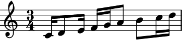
Note
Auxjad automatically adds this function as an extension method to
abjad.mutate(). It can thus be used from eitherauxjad.mutate()orabjad.mutate(). Therefore, the two lines below are equivalent:>>> auxjad.mutate(staff[:]).prettify_rewrite_meter(meter) >>> abjad.mutate(staff[:]).prettify_rewrite_meter(meter)
- Other examples:
The rhythm of the leaves just before and after the two leaves to be fused can be different than
denominator / 4, as the function searches for logical ties of specific length and offset, and its surroundings do not matter.>>> staff = abjad.Staff(r"\time 3/4 c'32 d'32 e'8 f'16 " ... r"\times 2/3 {g'32 a'32 b'32} c''8 " ... r"r16 r32. d''64 e''8 f''32 g''32" ... ) >>> meter = abjad.Meter((3, 4)) >>> abjad.mutate(staff[:]).rewrite_meter(meter) >>> abjad.f(staff) \new Staff { \time 3/4 c'32 d'32 e'16 ~ e'16 f'16 \times 2/3 { g'32 a'32 b'32 } c''16 ~ c''16 r16 r32. d''64 e''16 ~ e''16 f''32 g''32 }

>>> auxjad.mutate(staff[:]).prettify_rewrite_meter(meter) >>> abjad.f(staff) \new Staff { \time 3/4 c'32 d'32 e'8 f'16 \times 2/3 { g'32 a'32 b'32 } c''8 r16 r32. d''64 e''8 f''32 g''32 }

fuse_across_groups_of_beats:By default, this function also fuses rhythms of type
denominator / 2denominator / 2~denominator / 2denominator / 2, becomingdenominator / 2denominatordenominator / 2. This is only applied when the meter’s structure has a depth of 2, which is the case for meters with numerators equal to or larger than5.>>> staff = abjad.Staff(r"\time 6/4 c'8 d'4 e'4 f'4 g'4 a'4 b'8") >>> meter = abjad.Meter((6, 4)) >>> abjad.mutate(staff[:]).rewrite_meter(meter) >>> abjad.f(staff) \new Staff { \time 6/4 c'8 d'8 ~ d'8 e'8 ~ e'8 f'8 ~ f'8 g'8 ~ g'8 a'8 ~ a'8 b'8 }

>>> auxjad.mutate(staff[:]).prettify_rewrite_meter(meter) >>> abjad.f(staff) \new Staff { \time 6/4 c'8 d'4 e'4 f'8 ~ f'8 g'4 a'4 b'8 }
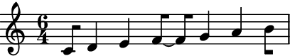to disable this behaviour, set the optional keyword argument
fuse_across_groups_of_beatstoFalse.>>> staff = abjad.Staff(r"\time 6/4 c'8 d'4 e'4 f'4 g'4 a'4 b'8") >>> meter = abjad.Meter((6, 4)) >>> abjad.mutate(staff[:]).rewrite_meter(meter) >>> auxjad.mutate(staff[:]).prettify_rewrite_meter( ... meter, ... fuse_across_groups_of_beats=False, ... ) >>> abjad.f(staff) \new Staff { \time 6/4 c'8 d'8 ~ d'8 e'8 ~ e'8 f'8 ~ f'8 g'8 ~ g'8 a'8 ~ a'8 b'8 }

abjad.Meterwithincrease_monotonic=True:The fused notes will respect the beat structures of such meters, even when
increase_monotonicis set to the non-default valueTrue. Compare the outputs below.>>> staff = abjad.Staff(r"\time 7/4 c'8 d'4 e'4 f'4 g'4 a'4 b'4 c''8") >>> meter = abjad.Meter((7, 4)) >>> abjad.mutate(staff[:]).rewrite_meter(meter) >>> auxjad.mutate(staff[:]).prettify_rewrite_meter(meter) >>> abjad.f(staff) \new Staff { \time 7/4 c'8 d'4 e'4 f'8 ~ f'8 g'4 a'8 ~ a'8 b'4 c''8 }
>>> staff = abjad.Staff(r"\time 7/4 c'8 d'4 e'4 f'4 g'4 a'4 b'4 c''8") >>> meter = abjad.Meter((7, 4), increase_monotonic=True) >>> abjad.mutate(staff[:]).rewrite_meter(meter) >>> auxjad.mutate(staff[:]).prettify_rewrite_meter(meter) >>> abjad.f(staff) \new Staff { \time 7/4 c'8 d'4 e'8 ~ e'8 f'4 g'8 ~ g'8 a'4 b'4 c''8 }
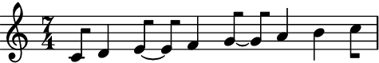- Multiple measures at once:
This function can take handle multiple measures at once, as long as they share the same meter.
>>> staff = abjad.Staff(r"\time 5/8 c'16 d'8 e'8 f'8 g'8 a'16 ~ " ... r"a'16 b'8 c''8 d''8 e''8 f''16" ... ) >>> meter = abjad.Meter((5, 8)) >>> for measure in abjad.select(staff[:]).group_by_measure(): ... abjad.mutate(staff[:]).rewrite_meter(meter) >>> abjad.f(staff) \new Staff { \time 5/8 c'16 d'16 ~ d'16 e'16 ~ e'16 f'16 ~ f'16 g'16 ~ g'16 a'16 ~ a'16 b'16 ~ b'16 c''16 ~ c''16 d''16 ~ d''16 e''16 ~ e''16 f''16 }

>>> auxjad.mutate(staff[:]).prettify_rewrite_meter(meter) >>> abjad.f(staff) \new Staff { \time 5/8 c'16 d'8 e'8 f'16 ~ f'16 g'8 a'16 ~ a'16 b'8 c''8 d''16 ~ d''16 e''8 f''16 }
- Multiple measures:
Similarly to
abjad.mutate().rewrite_meter(), this function accepts selections of multiple measures:>>> staff = abjad.Staff(r"\time 4/4 c'8 d'4 e'4 f'4 g'8 | " ... r"a'8 b'4 c''8 d''16 e''4 f''8.") >>> meter = abjad.Meter((4, 4)) >>> for measure in abjad.select(staff[:]).group_by_measure(): ... abjad.mutate(measure).rewrite_meter(meter) >>> abjad.f(staff) \new Staff { \time 4/4 c'8 d'8 ~ d'8 e'8 ~ e'8 f'8 ~ f'8 g'8 a'8 b'8 ~ b'8 c''8 d''16 e''8. ~ e''16 f''8. }
>>> for measure in abjad.select(staff[:]).group_by_measure(): ... auxjad.mutate(measure).prettify_rewrite_meter(meter) >>> abjad.f(staff) \new Staff { \time 4/4 c'8 d'4 e'8 ~ e'8 f'4 g'8 a'8 b'4 c''8 d''16 e''8. ~ e''16 f''8. }

- Multiple measures with different meters:
If the measures have different meters, they can be passed on individually using
zip()as shown below.>>> staff = abjad.Staff(r"\time 3/4 c'8 d'4 e'4 f'16 g'16 | " ... r"\time 4/4 a'8 b'4 c''8 d''16 e''4 f''8.") >>> meters = [abjad.Meter((3, 4)), abjad.Meter((4, 4))] >>> for meter, measure in zip( ... meters, ... abjad.select(staff[:]).group_by_measure(), ... ): ... abjad.mutate(measure).rewrite_meter(meter) >>> abjad.f(staff) \new Staff { \time 3/4 c'8 d'8 ~ d'8 e'8 ~ e'8 f'16 g'16 \time 4/4 a'8 b'8 ~ b'8 c''8 d''16 e''8. ~ e''16 f''8. }
>>> for meter, measure in zip( ... meters, ... abjad.select(staff[:]).group_by_measure(), ... ): ... auxjad.mutate(measure).prettify_rewrite_meter(meter) >>> abjad.f(staff) \new Staff { \time 3/4 c'8 d'4 e'4 f'16 g'16 \time 4/4 a'8 b'4 c''8 d''16 e''8. ~ e''16 f''8. }

fuse_quadruple_meter:This function also takes care of two special cases, namely quadruple and triple meters. By default, it will fuse leaves in quadruple meters across beats 1 and 2, and across beats 3 and 4 (as long as they fulfil the other requirements of duration and offset).
>>> staff = abjad.Staff(r"\time 4/4 c'8 d'4 e'4 f'4 g'8") >>> meter = abjad.Meter((4, 4)) >>> abjad.mutate(staff[:]).rewrite_meter(meter) >>> auxjad.mutate(staff[:]).prettify_rewrite_meter(meter) >>> abjad.f(staff) \new Staff { \time 4/4 c'8 d'4 e'8 ~ e'8 f'4 g'8 }

Set
fuse_quadruple_metertoFalseto disable this behaviour.>>> staff = abjad.Staff(r"\time 4/4 c'8 d'4 e'4 f'4 g'8") >>> meter = abjad.Meter((4, 4)) >>> abjad.mutate(staff[:]).rewrite_meter(meter) >>> auxjad.mutate(staff[:]).prettify_rewrite_meter( ... meter, ... fuse_quadruple_meter=False, ... ) >>> abjad.f(staff) \new Staff { \time 4/4 c'8 d'8 ~ d'8 e'8 ~ e'8 f'8 ~ f'8 g'8 }
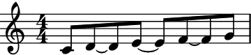fuse_triple_meter:In the case of triple meters, it will fuse leaves across any beat as long as the previously mentioned conditions of offset and duration are met.
>>> staff = abjad.Staff(r"\time 3/4 c'8 d'4 e'4 f'8") >>> meter = abjad.Meter((3, 4)) >>> abjad.mutate(staff[:]).rewrite_meter(meter) >>> auxjad.mutate(staff[:]).prettify_rewrite_meter(meter) >>> abjad.f(staff) \new Staff { \time 3/4 c'8 d'4 e'4 f'8 }
Similarly to the example before, set
fuse_triple_metertoFalseto disable this behaviour.>>> staff = abjad.Staff(r"\time 3/4 c'8 d'4 e'4 f'8") >>> meter = abjad.Meter((3, 4)) >>> abjad.mutate(staff[:]).rewrite_meter(meter) >>> auxjad.mutate(staff[:]).prettify_rewrite_meter( ... meter, ... fuse_triple_meter=False, ... ) >>> abjad.f(staff) \new Staff { \time 3/4 c'8 d'8 ~ d'8 e'8 ~ e'8 f'8 }
extract_trivial_tuplets:By default, this function extracts the contents of tuples that consist solely of rests, or solely of tied notes and chords.
>>> staff = abjad.Staff( ... r"\times 2/3 {c'4 ~ c'8} \times 2/3 {d'8 r4} " ... r"\times 2/3 {r8 r8 r8} \times 2/3 {<e' g'>8 ~ <e' g'>4}" ... ) >>> meter = abjad.Meter((4, 4)) >>> abjad.mutate(staff[:]).rewrite_meter(meter) >>> abjad.mutate(staff[:]).prettify_rewrite_meter(meter) >>> abjad.f(staff) \new Staff { c'4 \times 2/3 { d'8 r4 } r4 <e' g'>4 }

Set
extract_trivial_tupletstoFalseto disable this behaviour.>>> staff = abjad.Staff( ... r"\times 2/3 {c'4 ~ c'8} \times 2/3 {d'8 r4} " ... r"\times 2/3 {r8 r8 r8} \times 2/3 {<e' g'>8 ~ <e' g'>4}" ... ) >>> meter = abjad.Meter((4, 4)) >>> abjad.mutate(staff[:]).rewrite_meter(meter) >>> abjad.mutate(staff[:]).prettify_rewrite_meter( ... meter, ... extract_trivial_tuplets=False, ... ) >>> abjad.f(staff) \new Staff { \times 2/3 { c'4. } \times 2/3 { d'8 r4 } \times 2/3 { r4. } \times 2/3 { <e' g'>4. } }

split_quadruple_meterWhen applying
abjad.mutate().rewrite_meter()to a selection with quadruple meter and without using a deeperboundary_depththan the default, the resulting notation will often have leaves crossing the third beat of the measure, as shown below.>>> staff = abjad.Staff( ... r"c'4 d'2 r4" ... r"e'4. f'2 g'8" ... r"a'4. b'4. c''4" ... r"d''16 e''8. f''4. g''4 a''8" ... ) >>> meter = abjad.Meter((4, 4)) >>> for measure in abjad.select(staff[:]).group_by_measure(): ... abjad.mutate(measure).rewrite_meter(meter) >>> abjad.f(staff) \new Staff { c'4 d'2 r4 e'4. f'8 ~ f'4. g'8 a'4. b'4. c''4 d''16 e''8. f''4. g''8 ~ g''8 a''8 }

This function tests those leaves against a series of rules, splitting them when the tests fails. In the case shown above, the first two bars are very easy to read rhythmically, but the third and fourth are less so. This is due to the dotted crotchet, which starts off a beat, crossing the third beat of the measure. This function will split these sort of leaves as shown below.
>>> abjad.mutate(staff[:]).prettify_rewrite_meter(meter) >>> abjad.f(staff) \new Staff { c'4 d'2 r4 e'4. f'8 ~ f'4. g'8 a'4. b'8 ~ b'4 c''4 d''16 e''8. f''4 ~ f''8 g''4 a''8 } .. figure:: ../_images/prettify_rewrite_meter-56dy04wjzg.png
Set
split_quadruple_metertoFalseto disable this behaviour.>>> staff = abjad.Staff( ... r"c'4 d'2 r4" ... r"e'4. f'2 g'8" ... r"a'4. b'4. c''4" ... r"d''16 e''8. f''4. g''4 a''8" ... ) >>> meter = abjad.Meter((4, 4)) >>> for measure in abjad.select(staff[:]).group_by_measure(): ... abjad.mutate(measure).rewrite_meter(meter) >>> abjad.mutate(staff[:]).prettify_rewrite_meter( ... meter, ... split_quadruple_meter=False, ... ) >>> abjad.f(staff) \new Staff { c'4 d'2 r4 e'4. f'8 ~ f'4. g'8 a'4. b'4. c''4 d''16 e''8. f''4. g''4 a''8 }

Tip
Use
auxjad.auto_rewrite_meter()to automatically applyabjad.mutate().rewrite_meter()andauxjad.mutate().prettify_rewrite_meter()to a container with multiple time signatures.Warning
The input selection must be a contiguous logical voice. When dealing with a container with multiple subcontainers (e.g. a score containing multiple staves), the best approach is to cycle through these subcontainers, applying this function to them individually.
-
remove_repeated_dynamics(*, ignore_hairpins: bool = False, reset_after_rests: bool = False) → None¶ Mutates an input
abjad.Selectionin place and has no return value; this function removes all consecutive repeated dynamic markings.- Basic usage:
When two consecutive leaves have identical dynamics, the second one is removed:
>>> staff = abjad.Staff(r"\time 3/8 c'4\pp d'8\pp | c'4\f d'8\f") >>> abjad.f(staff) \new Staff { \time 3/8 c'4 \pp d'8 \pp c'4 \f d'8 \f }

>>> auxjad.mutate(staff[:]).remove_repeated_dynamics() >>> abjad.f(staff) \new Staff { \time 3/8 c'4 \pp d'8 c'4 \f d'8 }
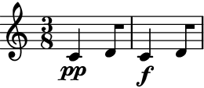
Note
Auxjad automatically adds this function as an extension method to
abjad.mutate(). It can thus be used from eitherauxjad.mutate()orabjad.mutate(). Therefore, the two lines below are equivalent:>>> auxjad.mutate(staff[:]).remove_repeated_dynamics() >>> abjad.mutate(staff[:]).remove_repeated_dynamics()
- Dynamic structure:
The function also removes dynamics that are separated by an arbitrary number of leaves without dynamics:
>>> staff = abjad.Staff(r"\time 3/8 c'4\p d'8 | e'4.\p | c'4\p d'8\f") >>> abjad.f(staff) \new Staff { \time 3/8 c'4 \p d'8 e'4. \p c'4 \p d'8 \f }
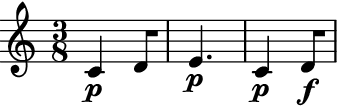>>> auxjad.mutate(staff[:]).remove_repeated_dynamics() >>> abjad.f(staff) \new Staff { \time 3/8 c'4 \p d'8 e'4. c'4 d'8 \f }
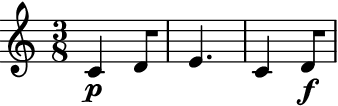- Subcontainers:
The container from which the selection is made can also have subcontainers:
>>> staff = abjad.Staff([abjad.Note("c'2"), ... abjad.Chord("<d' f'>2"), ... abjad.Tuplet((2, 3), "g2 a2 b2"), ... ]) >>> abjad.attach(abjad.Dynamic('ppp'), staff[0]) >>> abjad.attach(abjad.Dynamic('ppp'), staff[1]) >>> abjad.attach(abjad.Dynamic('ppp'), staff[2][0]) >>> abjad.f(staff) \new Staff { c'2 \ppp <d' f'>2 \ppp \times 2/3 { g2 \ppp a2 b2 } }

>>> auxjad.mutate(staff[:]).remove_repeated_dynamics() >>> abjad.f(staff) \new Staff { c'2 \ppp <d' f'>2 \times 2/3 { g2 a2 b2 } }

ignore_hairpins:By default, repeated dynamics with hairpins in between are not removed, but consecutive ones will.
>>> staff = abjad.Staff(r"c'2\p\< d'2\f\> | c'2\f d'2\f | e'1\p") >>> abjad.f(staff) \new Staff { c'1 \p \< d'1 \f \> c'1 \f d'1 \f e'1 \p }

>>> auxjad.mutate(staff[:]).remove_repeated_dynamics() >>> abjad.f(staff) \new Staff { c'1 \p \< d'1 \f \> c'1 \f d'1 e'1 \p }

To override the previous behaviour, set
ignore_hairpins=Trueand hairpins will be ignored.>>> staff = abjad.Staff(r"c'2\p\< d'2\f\> | c'2\f d'2\f | e'1\p") >>> abjad.f(staff) \new Staff { c'1 \p \< d'1 \f \> c'1 \f d'1 \f e'1 \p }

>>> auxjad.mutate(staff[:]).remove_repeated_dynamics( ... ignore_hairpins=True, ... ) >>> abjad.f(staff) \new Staff { c'1 \p \< d'1 \f \> c'1 d'1 e'1 \p }

reset_after_rests:By default, rests are treated just like any other leaf and thus notes with an identical dynamic separated by an arbitrary number of rests will be considered as repeated and the second dynamic will be removed.
>>> staff = abjad.Staff(r"c'4\pp r2. | c'1\pp") >>> auxjad.mutate(staff[:]).remove_repeated_dynamics() >>> abjad.f(staff) \new Staff { c'4 \pp r2. c'1 }

To override the previous behaviour, set
reset_after_rests=Trueand dynamics will always be restated after a rest.>>> staff = abjad.Staff(r"c'4\pp r2. | c'1\pp") >>> auxjad.mutate(staff[:]).remove_repeated_dynamics( ... reset_after_rests=True, ... ) >>> abjad.f(staff) \new Staff { c'4 \pp r2. c'1 \pp }

reset_after_restsand non-boolvalues:The argument
reset_after_reststakes not onlyboolvalues but also durations (abjad.Duration,tuple,float, etc.). This sets the maximum length of rests before which identical dynamics are restated. If the total length of rests falls below that value, then repeated dynamics are removed.In the case below, a rest of
r2. is shorter than a duration of(4, 4), so the repeated dynamic is removed.>>> staff = abjad.Staff(r"c'4\pp r2. | c'1\pp") >>> auxjad.mutate(staff[:]).remove_repeated_dynamics( ... reset_after_rests=(4, 4) ... ) >>> abjad.f(staff) \new Staff { c'4 \pp r2. c'1 }

But setting the duration to
2/4forces the dynamic to be restated.>>> staff = abjad.Staff(r"c'4\pp r2. | c'1\pp") >>> auxjad.mutate(staff[:]).remove_repeated_dynamics( ... reset_after_rests=2 / 4 ... ) >>> abjad.f(staff) \new Staff { c'4 \pp r2. c'1 \pp }
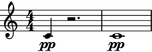reset_after_rests:The function also handles measure rests with
reset_after_rests.>>> staff = abjad.Staff(r"c'4\pp r2. | c'4\pp r2. | R1 | c'1\pp") >>> auxjad.mutate(staff[:]).remove_repeated_dynamics( ... reset_after_rests=abjad.Duration(4, 4) ... ) >>> abjad.f(staff) \new Staff { c'4 \pp r2. c'4 r2. R1 c'1 \pp }
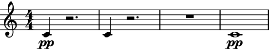
Warning
The input selection must be a contiguous logical voice. When dealing with a container with multiple subcontainers (e.g. a score containing multiple staves), the best approach is to cycle through these subcontainers, applying this function to them individually.
-
remove_repeated_time_signatures() → None¶ Mutates an input
abjad.Selectionin place and has no return value; this function removes all consecutive repeated time signatures.- Basic usage:
When two consecutive measures have identical time signatures, the second one is removed:
>>> staff = abjad.Staff(r"c'4 d'8 | c'4 d'8") >>> abjad.attach(abjad.TimeSignature((3, 8)), staff[0]) >>> abjad.attach(abjad.TimeSignature((3, 8)), staff[2]) >>> abjad.f(staff) \new Staff { \time 3/8 c'4 d'8 \time 3/8 c'4 d'8 }
>>> auxjad.mutate(staff[:]).remove_repeated_time_signatures() >>> abjad.f(staff) \new Staff { \time 3/8 c'4 d'8 c'4 d'8 }
Note
Auxjad automatically adds this function as an extension method to
abjad.mutate(). It can thus be used from eitherauxjad.mutate()orabjad.mutate(). Therefore, the two lines below are equivalent:>>> auxjad.mutate(staff[:]).remove_repeated_time_signatures() >>> abjad.mutate(staff[:]).remove_repeated_time_signatures()
- Time signature structure:
The function also removes time signatures that are separated by an arbitrary number of measures without one:
>>> staff = abjad.Staff(r"c'4 d'8 e'4. c'4 d'8") >>> abjad.attach(abjad.TimeSignature((3, 8)), staff[0]) >>> abjad.attach(abjad.TimeSignature((3, 8)), staff[3]) >>> abjad.f(staff) \new Staff { \time 3/8 c'4 d'8 e'4. \time 3/8 c'4 d'8 }
>>> auxjad.mutate(staff[:]).remove_repeated_time_signatures() >>> abjad.f(staff) \new Staff { \time 3/8 c'4 d'8 e'4. c'4 d'8 }
- Subcontainers:
The container from which the selection is made can also have subcontainers, including cases in which the time signatures are attached to leaves of subcontainers:
>>> staff = abjad.Staff([abjad.Note("c'2"), ... abjad.Chord("<d' f'>2"), ... abjad.Tuplet((2, 3), "g2 a2 b2"), ... ]) >>> abjad.attach(abjad.TimeSignature((2, 2)), staff[0]) >>> abjad.attach(abjad.TimeSignature((2, 2)), staff[2][0]) >>> abjad.f(staff) \new Staff { \time 2/2 c'2 <d' f'>2 \times 2/3 { \time 2/2 g2 a2 b2 } }
>>> auxjad.mutate(staff[:]).remove_repeated_time_signatures() >>> abjad.f(staff) \new Staff { \time 2/2 c'2 <d' f'>2 \times 2/3 { g2 a2 b2 } }
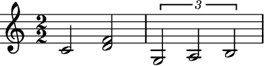
Warning
The input selection must be a contiguous logical voice. When dealing with a container with multiple subcontainers (e.g. a score containing multiple staves), the best approach is to cycle through these subcontainers, applying this function to them individually.
-
reposition_clefs(*, shift_clef_to_notes: bool = True, implicit_clef: abjad.indicators.Clef.Clef = Clef('treble')) → None¶ Mutates an input
abjad.Selectionin place and has no return value; this function removes all consecutive repeated clefs. It can also be used to shift clefs from rests to pitched leaves.- Basic usage:
When consecutive clefs are the same, the second one is removed:
>>> staff = abjad.Staff(r"c'1 | d'1") >>> abjad.attach(abjad.Clef('treble'), staff[0]) >>> abjad.attach(abjad.Clef('treble'), staff[1]) >>> abjad.f(staff) \new Staff { \clef "treble" c'1 \clef "treble" d'1 }

>>> auxjad.mutate(staff[:]).reposition_clefs() >>> abjad.f(staff) \new Staff { \clef "treble" c'1 d'1 }
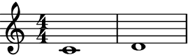
Note
Auxjad automatically adds this function as an extension method to
abjad.mutate(). It can thus be used from eitherauxjad.mutate()orabjad.mutate(). Therefore, the two lines below are equivalent:>>> auxjad.mutate(staff[:]).reposition_clefs() >>> abjad.mutate(staff[:]).reposition_clefs()
- LilyPond’s fallback clef:
As seen above, LilyPond automatically omits repeated clefs unless the first clef is omitted. In that case, it uses a treble clef as fallback, although it won’t then remove a subsequent repeated treble clef:
>>> staff = abjad.Staff(r"c'1 | d'1") >>> abjad.attach(abjad.Clef('treble'), staff[1]) >>> abjad.f(staff) \new Staff { c'1 \clef "treble" d'1 }

This function handles fallback clefs too:
>>> auxjad.mutate(staff[:]).reposition_clefs() >>> abjad.f(staff) \new Staff { c'1 d'1 }

- Clef structure:
The function also removes clefs that are separated by an arbitrary number of leaves without clefs:
>>> staff = abjad.Staff(r"c'1 | d'2 e'4 r4 | f'1") >>> abjad.attach(abjad.Clef('treble'), staff[4]) >>> abjad.f(staff) \new Staff { c'1 d'2 e'4 r4 \clef "treble" f'1 }

>>> auxjad.mutate(staff[:]).reposition_clefs() >>> abjad.f(staff) \new Staff { c'1 d'2 e'4 r4 f'1 }

- Inputs with optimal clef structure:
The function will not alter the container if the clef changes are already optimal.
>>> staff = abjad.Staff(r"c'1 | a,2 bf,4 r4 | f'1") >>> abjad.attach(abjad.Clef('bass'), staff[1]) >>> abjad.attach(abjad.Clef('treble'), staff[4]) >>> abjad.f(staff) \new Staff { c'1 \clef "bass" a,2 bf,4 r4 \clef "treble" f'1 }

>>> auxjad.mutate(staff[:]).reposition_clefs() >>> abjad.f(staff) \new Staff { c'1 \clef "bass" a,2 bf,4 r4 \clef "treble" f'1 }
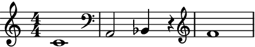- Multi-measure rests:
The function handles rests and multi-measure rests.
>>> staff = abjad.Staff(r"c'1 | d'2 r2 | R1 | e'1") >>> abjad.attach(abjad.Clef('treble'), staff[0]) >>> abjad.attach(abjad.Clef('treble'), staff[4]) >>> abjad.f(staff) \new Staff { c'1 d'2 r2 R1 \clef "treble" e'1 }

>>> auxjad.mutate(staff[:]).reposition_clefs() >>> abjad.f(staff) \new Staff { c'1 d'2 r2 R1 e'1 }
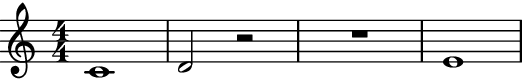shift_clef_to_notes:By default, clefs attached to rests are shifted to the first pitched leaf.
>>> staff = abjad.Staff(r"c'1 | d'2 r2 | fs1") >>> abjad.attach(abjad.Clef('treble'), staff[0]) >>> abjad.attach(abjad.Clef('bass'), staff[2]) >>> abjad.f(staff) \new Staff { \clef "treble" c'1 d'2 \clef "bass" r2 fs1 }

>>> auxjad.mutate(staff[:]).reposition_clefs() >>> abjad.f(staff) \new Staff { \clef "treble" c'1 d'2 r2 \clef "bass" fs1 }
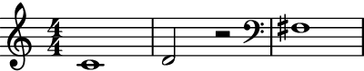Set
shift_clef_to_notestoFalseto disable this behaviour.>>> staff = abjad.Staff(r"c'1 | d'2 r2 | fs1") >>> abjad.attach(abjad.Clef('treble'), staff[0]) >>> abjad.attach(abjad.Clef('bass'), staff[2]) >>> auxjad.mutate(staff[:]).reposition_clefs(shift_clef_to_notes=False) >>> abjad.f(staff) \new Staff { \clef "treble" c'1 d'2 \clef "bass" r2 fs1 }

- Multiple multi-measure rests:
Clefs are shifted even if the container has multiple multi-measure rests.
>>> staff = abjad.Staff(r"\time 3/4 c'2. | d'4 r2 | R1 * 3/4 | e'2.") >>> abjad.attach(abjad.Clef('treble'), staff[0]) >>> abjad.attach(abjad.Clef('bass'), staff[2]) >>> abjad.f(staff) \new Staff { \time 3/4 \clef "treble" c'2. d'4 \clef "bass" r2 R1 * 3/4 e'2. }
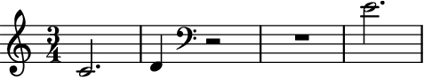>>> auxjad.mutate(staff[:]).reposition_clefs() >>> abjad.f(staff) \new Staff { \time 3/4 \clef "treble" c'2. d'4 r2 R1 * 3/4 \clef "bass" e'2. }

- Subcontainers:
The container from which the selection is made can also have subcontainers, including cases in which the clefs are attached to leaves of subcontainers:
>>> staff = abjad.Staff([abjad.Note("c'2"), ... abjad.Chord("<d' f'>2"), ... abjad.Tuplet((2, 3), "g'2 a'2 b'2"), ... ]) >>> abjad.attach(abjad.Clef('treble'), staff[2][1]) >>> abjad.f(staff) \new Staff { c'2 <d' f'>2 \times 2/3 { g'2 \clef "treble" a'2 b'2 } }

>>> auxjad.mutate(staff[:]).reposition_clefs() >>> abjad.f(staff) \new Staff { c'2 <d' f'>2 \times 2/3 { g'2 a'2 b'2 } }
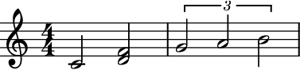implicit_clef:By default, when the first leaf doesn’t have a clef the function assumes that the music is written in treble clef (which is the default fallback clef in LilyPond).
>>> staff = abjad.Staff(r"c'1 | d'1") >>> abjad.attach(abjad.Clef('treble'), staff[1]) >>> abjad.f(staff) \new Staff { c'1 \clef "treble" d'1 }

>>> auxjad.mutate(staff[:]).reposition_clefs() >>> abjad.f(staff) \new Staff { c'1 d'1 }

Set the argument
implicit_clefto a differentabjad.Clefto change the implicit clef.>>> staff = abjad.Staff(r"c1 | d1") >>> abjad.attach(abjad.Clef('bass'), staff[1]) >>> abjad.f(staff) \new Staff { c1 \clef "bass" d1 }

>>> auxjad.mutate(staff[:]).reposition_clefs( ... implicit_clef=abjad.Clef('bass') ... ) >>> abjad.f(staff) \new Staff { c1 d1 }

This can be useful when extending a container that already has a specific clef.
>>> music = abjad.Staff(r"\clef bass c4 d4 e4 f4") >>> music.extend(staff) >>> abjad.f(music) \new Staff { \clef "bass" c4 d4 e4 f4 c1 d1 }
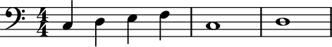
Warning
The input selection must be a contiguous logical voice. When dealing with a container with multiple subcontainers (e.g. a score containing multiple staves), the best approach is to cycle through these subcontainers, applying this function to them individually.
-
reposition_dynamics(*, allow_hairpins_under_rests: bool = False, check_hairpin_trends: bool = True, remove_repeated_dynamics: bool = True, allow_hairpin_to_rest_with_dynamic: bool = True) → None¶ Mutates an input
abjad.Selectionin place and has no return value; this function shifts all dynamics from rests to the next pitched leaves. It will also adjust hairpins if necessary.- Basic usage:
This function will shift dynamics under rests to the next pitched leaf.
>>> staff = abjad.Staff(r"c'1\p d'2 r2\f r1 e'1") >>> abjad.f(staff) \new Staff { c'1 \p d'2 r2 \f r1 e'1 }

>>> staff = abjad.Staff(r"c'1\p d'2 r2\f r1 e'1") >>> auxjad.mutate(staff[:]).reposition_dynamics() >>> abjad.f(staff) \new Staff { c'1 \p d'2 r2 r1 e'1 \f }

Note
Auxjad automatically adds this function as an extension method to
abjad.mutate(). It can thus be used from eitherauxjad.mutate()orabjad.mutate(). Therefore, the two lines below are equivalent:>>> auxjad.mutate(staff[:]).reposition_dynamics() >>> abjad.mutate(staff[:]).reposition_dynamics()
- Removing dynamics:
If the next pitched leaf already contain a dynamic, this function will simply remove the dynamic under the rest.
>>> staff = abjad.Staff(r"c'1\p d'2 r2\f r1\mf e'1\pp") >>> abjad.f(staff) \new Staff { c'1 \p d'2 r2 \f r1 \mf e'1 \pp }

>>> staff = abjad.Staff(r"c'1\p d'2 r2\f r1\mf e'1\pp") >>> auxjad.mutate(staff[:]).reposition_dynamics() >>> abjad.f(staff) \new Staff { c'1 \p d'2 r2 r1 e'1 \pp }
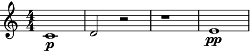remove_repeated_dynamics:By default indentical repeated dynamics are omitted.
>>> staff = abjad.Staff(r"c'1\p d'1 r1\f e'1\p") >>> auxjad.mutate(staff[:]).reposition_dynamics() >>> abjad.f(staff) \new Staff { c'1 \p d'1 r1 e'1 }
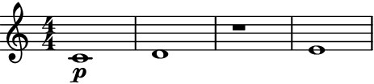Set the optional keyword argument
remove_repeated_dynamicstoFalseto disable this behaviour.>>> staff = abjad.Staff(r"c'1\p d'1 r1\f e'1\p") >>> auxjad.mutate(staff[:]).reposition_dynamics( ... remove_repeated_dynamics=False, ... ) >>> abjad.f(staff) \new Staff { c'1 \p d'1 r1 e'1 \p }

allow_hairpins_under_rests:This function will shorten hairpins until rests by default.
>>> staff = abjad.Staff(r"c'1\p\< d'2 r2 r1\f e'1") >>> abjad.f(staff) \new Staff { c'1 \p \< d'2 r2 r1 \f e'1 }

>>> staff = abjad.Staff(r"c'1\p\< d'2 r2 r1\f e'1") >>> auxjad.mutate(staff[:]).reposition_dynamics() >>> abjad.f(staff) \new Staff { c'1 \p \< d'2 r2 \! r1 e'1 \f }

Set the optional keyword argument
allow_hairpins_under_reststoTrueto allow hairpins to extend cross rests.>>> staff = abjad.Staff(r"c'1\p\< d'2 r2 r1\f e'1") >>> auxjad.mutate(staff[:]).reposition_dynamics( ... allow_hairpins_under_rests=True, ... ) >>> abjad.f(staff) \new Staff { c'1 \p \< d'2 r2 r1 e'1 \f }
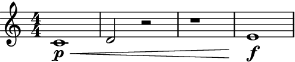allow_hairpin_to_rest_with_dynamic:Notice that if a hairpin leads to a rest with dynamic, that one is not removed.
>>> staff = abjad.Staff(r"c'1\p\< d'2 r2\f r1 e'1") >>> auxjad.mutate(staff[:]).reposition_dynamics() >>> abjad.f(staff) \new Staff { c'1 \p \< d'2 r2 \f r1 e'1 }

Set the argument
allow_hairpin_to_rest_with_dynamictoFalseto disable this behaviour.>>> staff = abjad.Staff(r"c'1\p\< d'2 r2\f r1 e'1") >>> auxjad.mutate(staff[:]).reposition_dynamics( ... allow_hairpin_to_rest_with_dynamic=False, ... ) >>> abjad.f(staff) \new Staff { c'1 \p \< d'2 r2 \! r1 e'1 \f }

check_hairpin_trends:This function will remove any hairpins connecting dynamics that grow in the opposite direction to the hairpin’s trend, such as a diminuendo hairpin from piano to forte.
>>> staff = abjad.Staff(r"c'1\p\> d'1\f\> e'1\p") >>> auxjad.mutate(staff[:]).reposition_dynamics() >>> abjad.f(staff) \new Staff { c'1 \p d'1 \f \> e'1 \p }

This behaviour can be disabled by setting the argument
check_hairpin_trendstoFalse.>>> staff = abjad.Staff(r"c'1\p\> d'1\f\> e'1\p") >>> auxjad.mutate(staff[:]).reposition_dynamics( ... check_hairpin_trends=False, ... ) >>> abjad.f(staff) \new Staff { c'1 \p \> d'1 \f \> e'1 \p }

Note
The behaviour described above is only applicable when a hairpin ends on a dynamic. Using the hairpin terminator
\!before a dynamic change will not cause a hairpin to be removed as it is not considered to be connecting dynamics of the opposite trend.>>> staff = abjad.Staff(r"c'1\p\> d'1\! e'1\f\> f'1\p") >>> auxjad.mutate(staff[:]).reposition_dynamics() >>> abjad.f(staff) \new Staff { c'1 \p \> d'1 \! e'1 \f \> f'1 \p }
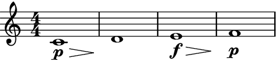- Types of hairpins:
This function can handle multiple types of hairpins as well as niente dynamics.
>>> staff = abjad.Staff(r"c'1 d'1 e'1 r1\mf r1\ff f'1 r1 g'1") >>> abjad.attach(abjad.Dynamic('niente', hide=True), staff[0]) >>> abjad.attach(abjad.Dynamic('niente', hide=True), staff[7]) >>> abjad.attach(abjad.StartHairpin('o<'), staff[0]) >>> abjad.attach(abjad.StartHairpin('>o'), staff[4]) >>> abjad.attach(abjad.StopHairpin(), staff[7]) >>> auxjad.mutate(staff[:]).reposition_dynamics() >>> abjad.f(staff) \new Staff { c'1 - \tweak circled-tip ##t \< d'1 e'1 r1 \mf r1 f'1 \ff - \tweak circled-tip ##t \> r1 \! g'1 }
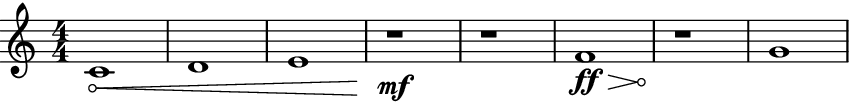>>> staff = abjad.Staff( ... r"c'1\p d'1\f\> e'1\ff\< r1\fff f'1\p\> g'1\ppp" ... ) >>> abjad.attach(abjad.StartHairpin('--'), staff[0]) >>> auxjad.mutate(staff[:]).reposition_dynamics() >>> abjad.f(staff) \new Staff { c'1 \p - \tweak stencil #constante-hairpin \< d'1 \f e'1 \ff \< r1 \fff f'1 \p \> g'1 \ppp }

- Multi-measure rests:
Multi-measure rests are also supported.
>>> staff = abjad.Staff(r"c'1\p R1\f d'1") >>> abjad.f(staff) \new Staff { c'1 \p R1 \f d'1 }

>>> staff = abjad.Staff(r"c'1\p R1\f d'1") >>> auxjad.mutate(staff[:]).reposition_dynamics() >>> abjad.f(staff) \new Staff { c'1 \p R1 d'1 \f }

Warning
The input selection must be a contiguous logical voice. When dealing with a container with multiple subcontainers (e.g. a score containing multiple staves), the best approach is to cycle through these subcontainers, applying this function to them individually.
-
reposition_slurs(*, allow_slurs_under_rests: bool = False, close_unterminated_final_slur: bool = True) → None¶ Mutates an input
abjad.Selectionin place and has no return value; this function repositions all slurs that starts or ends on rests.- Basic usage:
This function will shift slurs that ends on rests to the previous pitched leaf.
>>> staff = abjad.Staff(r"c'1( d'2 r2) r1 e'1") >>> abjad.f(staff) \new Staff { c'1 ( d'2 r2 ) r1 e'1 }
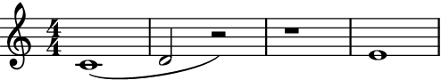>>> staff = abjad.Staff(r"c'1( d'2 r2) r1 e'1") >>> auxjad.mutate(staff[:]).reposition_slurs() >>> abjad.f(staff) \new Staff { c'1 ( d'2 ) r2 r1 e'1 }

Note
Auxjad automatically adds this function as an extension method to
abjad.mutate(). It can thus be used from eitherauxjad.mutate()orabjad.mutate(). Therefore, the two lines below are equivalent:>>> auxjad.mutate(staff[:]).reposition_slurs() >>> abjad.mutate(staff[:]).reposition_slurs()
- Rests:
Slurs starting on rests are shifted to the next pitched leaf.
>>> staff = abjad.Staff(r"c'1 r2( d'2 e'1)") >>> abjad.f(staff) \new Staff { c'1 r2 ( d'2 e'1 ) }

>>> staff = abjad.Staff(r"c'1 r2( d'2 e'1)") >>> auxjad.mutate(staff[:]).reposition_slurs() >>> abjad.f(staff) \new Staff { c'1 r2 d'2 ( e'1 ) }
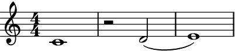- Multiple rests:
This function also works when multiple rests are present.
>>> staff = abjad.Staff(r"c'1( d'2 r2 r1) e'1") >>> abjad.f(staff) \new Staff { c'1 ( d'2 r2 r1 ) e'1 }

>>> staff = abjad.Staff(r"c'1( d'2 r2 r1) e'1") >>> auxjad.mutate(staff[:]).reposition_slurs() >>> abjad.f(staff) \new Staff { c'1 ( d'2 ) r2 r1 e'1 }

allow_slurs_under_rests:By default, a slur crossing a rest is broken into two.
>>> staff = abjad.Staff(r"c'1( d'2 r2 e'1 f'1)") >>> auxjad.mutate(staff[:]).reposition_slurs() >>> abjad.f(staff) \new Staff { c'1 ( d'2 ) r2 e'1 ( f'1 ) }

Set the optional keyword argument
allow_slurs_under_reststoTrueto allow slurs under rests.>>> staff = abjad.Staff(r"c'1( d'2 r2 e'1 f'1)") >>> auxjad.mutate(staff[:]).reposition_slurs( ... allow_slurs_under_rests=True, ... ) >>> abjad.f(staff) \new Staff { c'1 ( d'2 r2 e'1 f'1 ) }
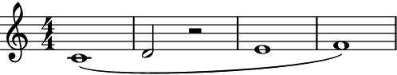close_unterminated_final_slur:By default, unterminated slurs at the end of the selection are closed when possible or removed when not.
>>> staff = abjad.Staff(r"c'1( d'2 r2 e'2 f'2) g'1( a'1") >>> auxjad.mutate(staff[:]).reposition_slurs() >>> abjad.f(staff) \new Staff { c'1 ( d'2 ) r2 e'2 ( f'2 ) g'1 ( a'1 ) }
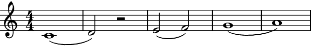Set the optional keyword argument
close_unterminated_final_slurtoFalseto disable this behaviour.>>> staff = abjad.Staff(r"c'1( d'2 r2 e'2 f'2) g'1( a'1") >>> auxjad.mutate(staff[:]).reposition_slurs( ... close_unterminated_final_slur=False, ... ) >>> abjad.f(staff) \new Staff { c'1 ( d'2 ) r2 e'2 ( f'2 ) g'1 ( a'1 }

When there are no pitched leaves left after an unterminated open slur, it is removed.
>>> staff = abjad.Staff(r"c'1( d'2 r2 e'2 f'2) g'1( r1") >>> auxjad.mutate(staff[:]).reposition_slurs() >>> abjad.f(staff) \new Staff { c'1 ( d'2 ) r2 e'2 ( f'2 ) g'1 r1 }
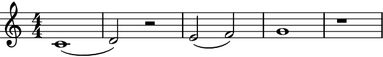
Note
Duplicate slur starts or stops are removed. Note that the score output will not change, as LilyPond also ignores duplicate slurs, but the output of
abjad.f()will be cleaner.>>> staff = abjad.Staff(r"c'1( d'2) e'2) f'2( g'2( a'1)") >>> auxjad.mutate(staff[:]).reposition_slurs() >>> abjad.f(staff) \new Staff { c'1 ( d'2 ) e'2 f'2 ( g'2 a'1 ) }

Warning
The input selection must be a contiguous logical voice. When dealing with a container with multiple subcontainers (e.g. a score containing multiple staves), the best approach is to cycle through these subcontainers, applying this function to them individually.
-
respell_accidentals(*, include_multiples: bool = False, respell_by_pitch_class: bool = False) → None¶ Mutates an input
abjad.Selectionin place and has no return value; this function changes the accidentals of individual pitches of all chords in a container in order to avoid augmented unisons.- Basic usage:
To use this function, apply it to a selection that contains chords that have augmented unisons.
>>> container = abjad.Container(r"c'4 r4 <ef' e'>4 g'4 <c' cs'>4 r2.") >>> auxjad.mutate(container[:]).respell_accidentals() >>> abjad.f(container) { c'4 r4 <ds' e'>4 g'4 <c' df'>4 r2. }

Note
Auxjad automatically adds this function as an extension method to
abjad.mutate(). It can thus be used from eitherauxjad.mutate()orabjad.mutate(). Therefore, the two lines below are equivalent:>>> auxjad.mutate(staff[:]).respell_accidentals() >>> abjad.mutate(staff[:]).respell_accidentals()
- 2-note chords:
The example below shows the default spelling of 2-note chords in Abjad in the upper staff, and the respelt 2-note chords in the bottom staff.
>>> staff1 = abjad.Staff() >>> staff2 = abjad.Staff() >>> for pitch in range(12): ... staff1.append(abjad.Chord([pitch, pitch + 1], (1, 16))) ... staff2.append(abjad.Chord([pitch, pitch + 1], (1, 16))) >>> auxjad.mutate(staff2[:]).respell_accidentals() >>> literal = abjad.LilyPondLiteral(r'\accidentalStyle dodecaphonic') >>> abjad.attach(literal, staff1) >>> abjad.attach(literal, staff2) >>> score = abjad.Score([staff1, staff2]) >>> abjad.f(score) \new Score << \new Staff { \accidentalStyle dodecaphonic <c' cs'>16 <cs' d'>16 <d' ef'>16 <ef' e'>16 <e' f'>16 <f' fs'>16 <fs' g'>16 <g' af'>16 <af' a'>16 <a' bf'>16 <bf' b'>16 <b' c''>16 } \new Staff { \accidentalStyle dodecaphonic <c' df'>16 <cs' d'>16 <d' ef'>16 <ds' e'>16 <e' f'>16 <f' gf'>16 <fs' g'>16 <g' af'>16 <gs' a'>16 <a' bf'>16 <as' b'>16 <b' c''>16 } >>

- augmented unissons in larger chords:
The function looks for all augmented unissons in chords of 3 or more pitches:
>>> container1 = abjad.Container(r"<a c' cs' f'>1") >>> container2 = abjad.Container(r"<a c' cs' f'>1") >>> auxjad.mutate(container2[:]).respell_accidentals() >>> staff = abjad.Staff([container1, container2]) >>> abjad.f(staff) \new Staff { { <a c' cs' f'>1 } { <a c' df' f'>1 } }

It is not a problem if the pitches are input out of order.
>>> container1 = abjad.Container(r"<e' cs' g' ef'>1") >>> container2 = abjad.Container(r"<e' cs' g' ef'>1") >>> auxjad.mutate(container2[:]).respell_accidentals() >>> staff = abjad.Staff([container1, container2]) >>> abjad.f(staff) \new Staff { { <cs' ef' e' g'>1 } { <cs' ds' e' g'>1 } }

include_multiples:By default, this function only changes spelling for pitches that are 1 semitone apart.
>>> container1 = abjad.Container(r"<c' cs''>1") >>> container2 = abjad.Container(r"<c' cs''>1") >>> auxjad.mutate(container2[:]).respell_accidentals() >>> staff = abjad.Staff([container1, container2]) >>> abjad.f(staff) \new Staff { { <c' cs''>1 } { <c' cs''>1 } }

To consider pitches in different octaves (thus including augmented unisons, augmented octaves, augmented fifteenths, etc.), call this function with the keyword argument
include_multiplesset toTrue.>>> container1 = abjad.Container(r"<c' cs''>1") >>> container2 = abjad.Container(r"<c' cs''>1") >>> auxjad.mutate(container2[:]).respell_accidentals( ... include_multiples=True, ... ) >>> staff = abjad.Staff([container1, container2]) >>> abjad.f(staff) \new Staff { { <c' cs''>1 } { <c' df''>1 } }

respell_by_pitch_class:By default, when this function changes the spelling of a pitch, it does not change the spelling of all other pitches with the same pitch-class.
>>> container1 = abjad.Container(r"<c' cs' cs''>1") >>> container2 = abjad.Container(r"<c' cs' cs''>1") >>> auxjad.mutate(container2[:]).respell_accidentals() >>> staff = abjad.Staff([container1, container2]) >>> abjad.f(staff) \new Staff { { <c' cs' cs''>1 } { <c' df' cs''>1 } }

To alter all pitch-classes, call this function with the keyword argument
respell_by_pitch_classset toTrue.>>> container1 = abjad.Container(r"<c' cs' cs''>1") >>> container2 = abjad.Container(r"<c' cs' cs''>1") >>> auxjad.mutate(container2[:]).respell_accidentals( ... respell_by_pitch_class=True, ... ) >>> staff = abjad.Staff([container1, container2]) >>> abjad.f(staff) \new Staff { { <c' cs' cs''>1 } { <c' df' df''>1 } }

-
rests_to_multimeasure_rest(*, ignore_clefs: bool = False) → None¶ Mutates an input
abjad.Selectionin place and has no return value; this function looks for measures filled with regular rests and converts them into anabjad.MultimeasureRest.- Basic usage:
Converts any measure filled with regular rests into a measure with a single multi-measure rest.
>>> container = abjad.Container(r"r1") >>> auxjad.mutate(container[:]).rests_to_multimeasure_rest() >>> abjad.f(container) { R1 }

Note
Auxjad automatically adds this function as an extension method to
abjad.mutate(). It can thus be used from eitherauxjad.mutate()orabjad.mutate(). Therefore, the two lines below are equivalent:>>> auxjad.mutate(staff[:]).rests_to_multimeasure_rest() >>> abjad.mutate(staff[:]).rests_to_multimeasure_rest()
- Multiple rests:
Works with measures with multiple regular rests.
>>> container = abjad.Container(r"r2 r8.. r32 r16 r8 r16") >>> abjad.f(container) { r2 r8.. r32 r16 r8 r16 }

>>> auxjad.mutate(container[:]).rests_to_multimeasure_rest() >>> abjad.f(container) { R1 }

Note
When using
abjad.Container’s, all time signatures in the output will be commented out with%%%.This is because Abjad only applies time signatures to containers that belong to aabjad.Staff. The present function works with eitherabjad.Containerandabjad.Staff.>>> container = abjad.Container(r"\time 3/4 c'4 d'4 e'4") >>> abjad.f(container) { %%% \time 3/4 %%% c'4 d'4 e'4 }

>>> staff = abjad.Staff([container]) >>> abjad.f(container) { \time 3/4 c'4 d'4 e'4 }

- Time signature changes:
Works with selections from containers with multiple time signatures as well as notes.
>>> container = abjad.Staff(r"\time 3/4 r2. | " ... "\time 6/8 r2. | " ... "\time 5/4 c'1 ~ c'4 | r1 r4" ... ) >>> auxjad.mutate(container[:]).rests_to_multimeasure_rest() >>> abjad.f(container) \new Staff { \time 3/4 R1 * 3/4 \time 6/8 R1 * 3/4 \time 5/4 c'1 ~ c'4 R1 * 5/4 }

- Tuplets:
Works with containers with tuplets.
>>> container = abjad.Container(r"\times 2/3 {r2 r2 r2}") >>> abjad.f(container) { \times 2/3 { r2 r2 r2 } }

>>> auxjad.mutate(container[:]).rests_to_multimeasure_rest() >>> abjad.f(container) { R1 }

It also works with containers with tuplets within tuplets.
>>> container = abjad.Container( ... r"r2 \times 2/3 {r2 r4} \times 4/5 {r2. \times 2/3 {r2 r4}}" ... ) >>> abjad.f(container) { r2 \times 2/3 { r2 r4 } \times 4/5 { r2. \times 2/3 { r2 r4 } } }
>>> auxjad.mutate(container[:]).rests_to_multimeasure_rest() >>> abjad.f(container) { R1 R1 }
ignore_clefsBy default, the last clef of an empty measure is preserved when replacing it with a multi-measure rest:
>>> staff = abjad.Staff(r"\clef bass r4 r4 \times 2/3 {r4 r8} r4 " ... r"\time 3/4 \clef treble r2. " ... r"\time 5/4 r2 \clef bass r2." ... ) >>> abjad.f(staff) \new Staff { \clef "bass" r4 r4 \times 2/3 { r4 r8 } r4 \time 3/4 \clef "treble" r2. \time 5/4 r2 \clef "bass" r2. }
>>> abjad.mutate(staff[:]).rests_to_multimeasure_rest() >>> abjad.f(staff) \new Staff { \clef "bass" R1 \time 3/4 \clef "treble" R1 * 3/4 \time 5/4 \clef "bass" R1 * 5/4 }

Invoke the mutation with
ignore_clefsset toTrueto disable this behaviour and ignore all clefs:>>> staff = abjad.Staff(r"\clef bass r4 r4 \times 2/3 {r4 r8} r4 " ... r"\time 3/4 \clef treble r2. " ... r"\time 5/4 r2 \clef bass r2." ... ) >>> abjad.mutate(staff[:]).rests_to_multimeasure_rest( ... ignore_clefs=True, ... ) >>> abjad.f(staff) \new Staff { R1 \time 3/4 R1 * 3/4 \time 5/4 R1 * 5/4 }

Warning
The input selection must be a contiguous logical voice. When dealing with a container with multiple subcontainers (e.g. a score containing multiple staves), the best approach is to cycle through these subcontainers, applying this function to them individually.
-
sustain_notes(*, sustain_multimeasure_rests: bool = True, rewrite_meter: bool = True) → None¶ Mutates an input container (of type
abjad.Containeror child class) in place and has no return value; this function will sustain all pitched leaves until the next pitched leaf, thus replacing all rests in between them.- Basic usage:
Simply call the function on a container.
>>> staff = abjad.Staff(r"c'16 r8. d'16 r8. e'16 r8. f'16 r8.") >>> abjad.f(staff) \new Staff { c'16 r8. d'16 r8. e'16 r8. f'16 r8. }
>>> auxjad.mutate(staff).sustain_notes() >>> abjad.f(staff) \new Staff { c'4 d'4 e'4 f'4 }

Note
Auxjad automatically adds this function as an extension method to
abjad.mutate(). It can thus be used from eitherauxjad.mutate()orabjad.mutate(). Therefore, the two lines below are equivalent:>>> auxjad.mutate(staff).close_containers() >>> abjad.mutate(staff).close_containers()
- Leaves with same pitch:
Leaves are sustained until the next pitched leaf, even if the pitch is the same.
>>> staff = abjad.Staff(r"c'16 r8. c'16 r8. c'16 r8. c'16 r8.") >>> abjad.f(staff) \new Staff { c'16 r8. c'16 r8. c'16 r8. c'16 r8. }

>>> auxjad.mutate(staff).sustain_notes() >>> abjad.f(staff) \new Staff { c'4 c'4 c'4 c'4 }
- Consecutive leaves with the same pitch:
Consecutive pitched leaves with a same pitch will not be tied.
>>> staff = abjad.Staff( ... r"<c' e'>16 r8. <c' e'>4 <c' e'>4 <c' e'>16 r8." ... ) >>> abjad.f(staff) \new Staff { <c' e'>16 r8. <c' e'>4 <c' e'>4 <c' e'>16 r8. }

>>> auxjad.mutate(staff).sustain_notes() >>> abjad.f(staff) \new Staff { <c' e'>4 <c' e'>4 <c' e'>4 <c' e'>4 }
- Tuplets:
This function handles tuplets.
>>> staff = abjad.Staff( ... r"\times 2/3 {c'4 d'4 r4} r8 e'8 \times 2/3 {f'8 r4}" ... ) >>> abjad.f(staff) \new Staff { \times 2/3 { c'4 d'4 r4 } r8 e'8 \times 2/3 { f'8 r4 } }

>>> auxjad.mutate(staff).sustain_notes() >>> abjad.f(staff) \new Staff { \times 2/3 { c'4 d'2 ~ } d'8 e'8 f'4 }
- Complex example:
This function can handle containers with a mixture of notes, chords, and rests, as well as tuplets.
>>> staff = abjad.Staff(r"c'16 r8. d'16 r8. r8 r32 <e' g'>32 r16 r4 " ... r"\times 2/3 {r4 f'4 r4} r4 g'8 r8 a'4 ~ " ... r"a'16 r8. b'4 c''8 r8 " ... r"r4. d''8 \times 4/5 {r8 d''2}" ... ) >>> abjad.f(staff) \new Staff { c'16 r8. d'16 r8. r8 r32 <e' g'>32 r16 r4 \times 2/3 { r4 f'4 r4 } r4 g'8 r8 a'4 ~ a'16 r8. b'4 c''8 r8 r4. d''8 \times 4/5 { r8 d''2 } }

>>> auxjad.mutate(staff).sustain_notes() >>> abjad.f(staff) \new Staff { c'4 d'4 ~ d'8 ~ d'32 <e' g'>16. ~ <e' g'>4 ~ \times 2/3 { <e' g'>4 f'2 ~ } f'4 g'4 a'2 b'4 c''4 ~ c''4. d''8 ~ \times 4/5 { d''8 d''2 } }

- Multi-measure rests:
This mutation also handles multi-measure rests, including ones with non-assignable durations:
>>> staff = abjad.Staff(r"r4 c'16 r8. d'16 r4.. " ... r"R1" ... r"r4 e'4 r2" ... r"\time 5/8 r8 f'4 r4" ... r"R1 * 5/8 " ... r"r8 g'8 a'8 r4" ... ) >>> abjad.f(staff) \new Staff { r4 c'16 r8. d'16 r4.. R1 r4 e'4 r2 \time 5/8 r8 f'4 r4 R1 * 5/8 r8 g'8 a'8 r4 }

>>> auxjad.mutate(staff).sustain_notes() >>> abjad.f(staff) \new Staff { r4 c'4 d'2 ~ d'1 ~ d'4 e'2. ~ \time 5/8 e'8 f'2 ~ f'4. ~ f'4 f'8 g'4 a'4 }

sustain_multimeasure_rests:By default, notes are tied across multi-measure rests.
>>> staff = abjad.Staff(r"r4 c'16 r8. d'16 r4.. " ... r"R1" ... r"r4 e'4 r2" ... r"\time 5/8 r8 f'4 r4" ... r"R1 * 5/8 " ... r"r8 g'8 a'8 r4" ... ) >>> abjad.f(staff) \new Staff { r4 c'16 r8. d'16 r4.. R1 r4 e'4 r2 \time 5/8 r8 f'4 r4 R1 * 5/8 r8 g'8 a'8 r4 }

To disable sustaining across those, set
sustain_multimeasure_reststoFalse:>>> auxjad.mutate(staff).sustain_notes(sustain_multimeasure_rests=True) >>> abjad.f(staff) \new Staff { r4 c'4 d'2 R1 r4 e'2. ~ \time 5/8 e'8 f'2 R1 * 5/8 r8 g'8 a'4. }

rewrite_meter:By default,
auxjad.mutate().auto_rewrite_meter()is summoned after notes are sustained.>>> staff = abjad.Staff(r"r4 c'16 r8. d'16 r4.. " ... r"R1" ... r"r4 e'4 r2" ... r"\time 5/8 r8 f'4 r4" ... r"R1 * 5/8 " ... r"r8 g'8 a'8 r4" ... ) >>> abjad.f(staff) \new Staff { r4 c'16 r8. d'16 r4.. R1 r4 e'4 r2 \time 5/8 r8 f'4 r4 R1 * 5/8 r8 g'8 a'8 r4 }
To disable this behaviour, set
rewrite_metertoFalse:>>> auxjad.mutate(staff).sustain_notes(rewrite_meter=False) >>> abjad.f(staff) \new Staff { r4 c'16 ~ c'8. d'16 ~ d'4.. ~ d'1 ~ d'4 e'4 ~ e'2 ~ \time 5/8 e'8 f'4 ~ f'4 ~ f'2 ~ f'8 f'8 g'8 ~ a'8 a'4 }
Warning
The input container must be a contiguous logical voice. When dealing with a container with multiple subcontainers (e.g. a score containing multiple staves), the best approach is to cycle through these subcontainers, applying this function to them individually.
-
sync_containers(*, use_multimeasure_rests: bool = True, adjust_last_time_signature: bool = True) → None¶ Mutates two or more input containers in place and has no return value; this function finds the longest container among the inputs and adds rests to all the shorter ones, making them the same length. Input argument can be a single
abjad.Scorewith multiple containers, or an iterable with elements of typeabjad.Containeror child classes.- Basic usage:
Input two or more containers. This function will fill the shortest ones with rests ensuring all their lengths become the same.
>>> staff1 = abjad.Staff(r"\time 4/4 g'2.") >>> staff2 = abjad.Staff(r"\time 4/4 c'1") >>> auxjad.mutate([staff1, staff2]).sync_containers() >>> abjad.f(staff1) \new Staff { \time 4/4 g'2. r4 }

>>> abjad.f(staff2) \new Staff { \time 4/4 c'1 }

Note
Auxjad automatically adds this function as an extension method to
abjad.mutate(). It can thus be used from eitherauxjad.mutate()orabjad.mutate(). Therefore, the two lines below are equivalent:>>> auxjad.mutate([container1, container2]).sync_containers() >>> abjad.mutate([container1, container2]).sync_containers()
Note
When using
abjad.Container’s, all time signatures in the output will be commented out with%%%.This is because Abjad only applies time signatures to containers that belong to aabjad.Staff. The present function works with eitherabjad.Containerandabjad.Staff.>>> container = abjad.Container(r"\time 3/4 c'4 d'4 e'4") >>> abjad.f(container) { %%% \time 3/4 %%% c'4 d'4 e'4 }

>>> staff = abjad.Staff([container]) >>> abjad.f(container) { \time 3/4 c'4 d'4 e'4 }

- Containers of same size:
If all containers have the same size, no modification is applied.
>>> container1 = abjad.Staff(r"\time 3/4 g'2.") >>> container2 = abjad.Staff(r"\time 3/4 c'2.") >>> auxjad.mutate([container1, container2]).sync_containers() >>> abjad.f(container1) \new Staff { \time 3/4 g'2. }

>>> abjad.f(container2) \new Staff { \time 3/4 c'2. }

- Underfull containers:
By default, this function closes the longest container by rewriting the time signature of its last measure if necessary (if it is underfull), and uses multi-measure rests whenever possible.
>>> container1 = abjad.Staff(r"\time 4/4 g'1 | f'4") >>> container2 = abjad.Staff(r"\time 4/4 c'1") >>> auxjad.mutate([container1, container2]).sync_containers() >>> abjad.f(container1) \new Staff { \time 4/4 g'1 \time 1/4 f'4 }

>>> abjad.f(container2) \new Staff { \time 4/4 c'1 \time 1/4 R1*1/4 }

adjust_last_time_signature:To allow containers to be left open (with underfull measures), set the keyword argument
adjust_last_time_signaturetoFalse.>>> container1 = abjad.Staff(r"\time 4/4 g'1 | f'4") >>> container2 = abjad.Staff(r"\time 4/4 c'1") >>> auxjad.mutate([container1, container2]).sync_containers( ... adjust_last_time_signature=False, ... ) >>> abjad.f(container1) \new Staff { \time 4/4 g'1 f'4 }
>>> abjad.f(container2) \new Staff { \time 4/4 c'1 r4 }

use_multimeasure_rests:To disable multi-measure rests, set the keyword argument
use_multimeasure_reststoFalse.>>> container1 = abjad.Staff(r"\time 4/4 g'1 | f'4") >>> container2 = abjad.Staff(r"\time 4/4 c'1") >>> auxjad.mutate([container1, container2]).sync_containers( ... use_multimeasure_rests=False, ... ) >>> abjad.f(container1) \new Staff { \time 4/4 g'1 \time 1/4 f'4 }

>>> abjad.f(container2) \new Staff { \time 4/4 c'1 \time 1/4 r4 }
- Adjusting last time signatures:
When adjusting the last time signature, this function will maintain the same time effective signature for as long as possible and only add a new one at the last measure if its duration is shorter.
>>> container1 = abjad.Staff(r"\time 7/4 a'1 ~ a'2.") >>> container2 = abjad.Staff(r"\time 3/4 c'2.") >>> auxjad.mutate([container1, container2]).sync_containers() >>> abjad.f(container2) \new Staff { \time 3/4 c'2. R1 * 3/4 \time 1/4 R1 * 1/4 }

- Multiple input containers:
This function can take an arbitrary number of containers.
>>> container1 = abjad.Staff(r"\time 4/4 c'1 | g'4") >>> container2 = abjad.Staff(r"\time 4/4 c'1 | g'2") >>> container3 = abjad.Staff(r"\time 4/4 c'1 | g'2.") >>> container4 = abjad.Staff(r"\time 4/4 c'1") >>> containers = [container1, ... container2, ... container3, ... container4, ... ] >>> auxjad.mutate(containers).sync_containers() >>> abjad.f(container1) \new Staff { \time 4/4 c'1 \time 3/4 g'4 r2 }

>>> abjad.f(container2) \new Staff { \time 4/4 c'1 \time 3/4 g'2 r4 }
>>> abjad.f(container3) \new Staff { \time 4/4 c'1 \time 3/4 g'2. }
>>> abjad.f(container4) \new Staff { \time 4/4 c'1 \time 3/4 R1*3/4 }

- Single input
abjad.Score: This function can also take a single
abjad.Scoreinstead of multipleabjad.Container’s orabjad.Staff’s.>>> staff1 = abjad.Staff(r"\time 3/8 c'4. | d'4") >>> staff2 = abjad.Staff(r"\time 3/8 c'4. | d'8") >>> staff3 = abjad.Staff(r"\time 3/8 c'4. | d'16") >>> staff4 = abjad.Staff(r"\time 3/8 c'4.") >>> score = abjad.Score([staff1, ... staff2, ... staff3, ... staff4, ... ]) >>> auxjad.mutate(score).sync_containers() >>> abjad.f(score) \new Score << \new Staff { \time 3/8 c'4. \time 1/4 d'4 } \new Staff { \time 3/8 c'4. \time 1/4 d'8 r8 } \new Staff { \time 3/8 c'4. \time 1/4 d'16 r8. } \new Staff { \time 3/8 c'4. \time 1/4 R1 * 1/4 } >>

- Time signature changes:
The containers can be of different length, can have different time signatures, and can contain time signature changes as well.
>>> container1 = abjad.Staff(r"\time 4/4 c'4 d'4 e'4 f'4") >>> container2 = abjad.Staff(r"\time 3/4 a2. \time 4/4 c'4") >>> container3 = abjad.Staff(r"\time 5/4 g''1 ~ g''4") >>> container4 = abjad.Staff(r"\time 6/8 c'2") >>> containers = [container1, ... container2, ... container3, ... container4, ... ] >>> auxjad.mutate(containers).sync_containers() >>> abjad.f(container1) \new Staff { \time 4/4 c'4 d'4 e'4 f'4 \time 1/4 R1*1/4 }
>>> abjad.f(container2) \new Staff { \time 3/4 a2. \time 2/4 c'4 r4 }

>>> abjad.f(container3) \new Staff { \time 5/4 g''1 ~ g''4 }

>>> abjad.f(container4) \new Staff { \time 6/8 c'2 r4 \time 2/4 R1*1/2 }
- Polymetric notation:
It’s important to note that LilyPond does not support simultanoues staves with different time signatures (i.e. polymetric notation) by default. In order to enable it, the
"Timing_translator"and"Default_bar_line_engraver"must be removed from theScorecontext and added to theStaffcontext. Below is a full example of how this can be accomplished using Abjad.>>> container1 = abjad.Container(r"\time 4/4 c'4 d'4 e'4 f'4") >>> container2 = abjad.Container(r"\time 3/4 a2. \time 4/4 c'4") >>> container3 = abjad.Container(r"\time 5/4 g''1 ~ g''4") >>> container4 = abjad.Container(r"\time 6/8 c'2") >>> containers = [container1, ... container2, ... container3, ... container4, ... ] >>> auxjad.mutate(containers).sync_containers() >>> staves = [abjad.Staff([container1]), ... abjad.Staff([container2]), ... abjad.Staff([container3]), ... abjad.Staff([container4]), ... ] >>> score = abjad.Score(staves) >>> lilypond_file = abjad.LilyPondFile.new() >>> score_block = abjad.Block(name='score') >>> layout_block = abjad.Block(name='layout') >>> score_block.items.append(score) >>> score_block.items.append(layout_block) >>> lilypond_file.items.append(score_block) >>> layout_block.items.append( ... r''' ... \context { ... \Score ... \remove "Timing_translator" ... \remove "Default_bar_line_engraver" ... } ... \context { ... \Staff ... \consists "Timing_translator" ... \consists "Default_bar_line_engraver" ... } ... ''') >>> abjad.f(lilypond_file) \score { %! abjad.LilyPondFile._get_formatted_blocks() \new Score << \new Staff { { \time 4/4 c'4 d'4 e'4 f'4 \time 1/4 R1 * 1/4 } } \new Staff { { \time 3/4 a2. \time 2/4 c'4 r4 } } \new Staff { { \time 5/4 g''1 ~ g''4 } } \new Staff { { \time 6/8 c'2 r4 \time 2/4 R1 * 1/2 } } >> \layout { \context { \Score \remove "Timing_translator" \remove "Default_bar_line_engraver" } \context { \Staff \consists "Timing_translator" \consists "Default_bar_line_engraver" } } } %! abjad.LilyPondFile._get_formatted_blocks()

Error
If one or more containers is malformed, i.e. it has an underfilled measure before a time signature change, the function raises a
ValueErrorexception.>>> container1 = abjad.Container(r"\time 4/4 g'1 | f'4") >>> container2 = abjad.Container(r"\time 5/4 c'1 | \time 4/4 d'4") >>> auxjad.mutate([container1, container2]).sync_containers() ValueError: at least one 'container' is malformed, with an underfull measure preceding a time signature change
-